🐑 大西部开拓者:新西兰开拓史
Great Western Trail: New Zealand · 设计:Alexander Pfister · eggertspiele 出版/本长文化发行 · 1–4 人(繁体中文规则书全文转录,含单人模式)
本页整理自集石《大西部开拓者:新西兰开拓史》词条所载非官方规则书扫描件(2024-07-06 发布,29 图,去重后 28 页),逐页全文转录,扫描图随文嵌入——点击任意图片即可放大查看。规则内容归 Alexander Pfister、eggertspiele、本长文化及版权方所有,转录仅供个人学习查阅。
整理说明:原帖扫描顺序混乱,本页已按「一盒四册」各自的印刷页码重排——①主規則書(封面+印刷頁 2~20);②附錄:行動詳解(獨立頁碼,原帖缺頁 2~3);③私有建築物板塊總覽(獨立頁碼,原帖缺頁 1);④英雌狠角色:單人模式(獨立頁碼,頁 1~4 完整)。封面在原帖连贴两次,已去重。繁体原样照录、未作繁简转换;原书排印问题照录:「追朔」(追溯之误)、「並獲等同本次總羊毛值」缺「得」、「并相应的任何运费」缺「支付」、「将在第15进行说明」缺「頁」、「沙拉/莎拉」混用、「開拓者轨/開拓之路」混用等;图示小字无法辨认处以〔圖示:…〕/〔?〕标注,未按常识补全。
主規則書(封面+印刷頁2–20)
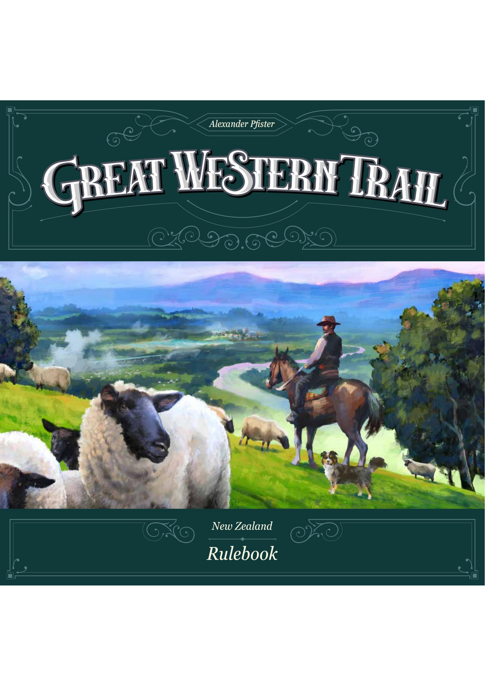
封面页
Alexander Pfister
GREAT WESTERN TRAIL
New Zealand
Rulebook
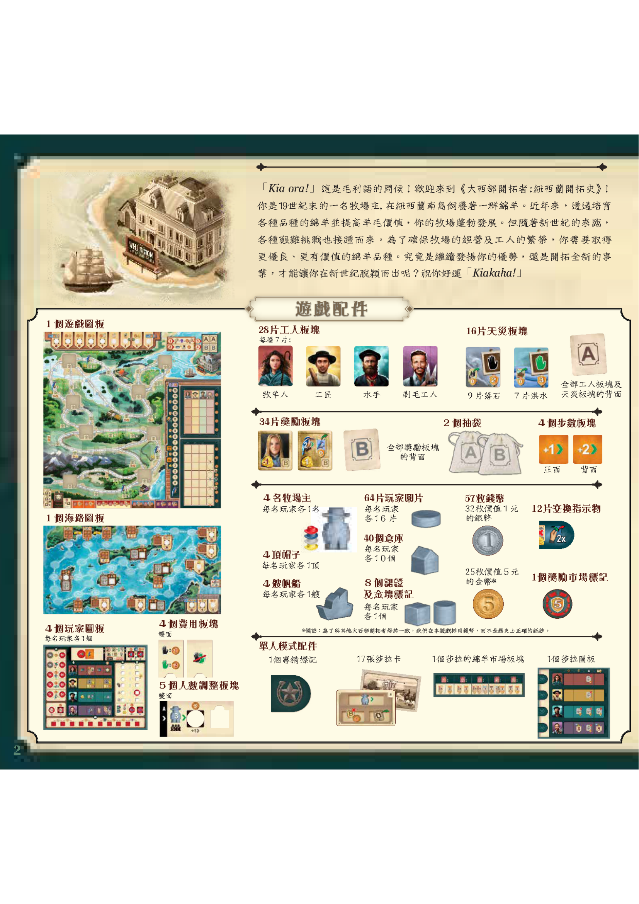
〔左上插圖：海灣旁的牧場宅邸建築與帆船照片〕
〔開場引言段落：〕
「Kia ora!」這是毛利語的問候！歡迎來到《大西部開拓者：紐西蘭開拓史》！你是19世紀末的一名牧場主，在紐西蘭南島飼養著一群綿羊。近年來，透過培育各種品種的綿羊並提高羊毛價值，你的牧場蓬勃發展。但隨著新世紀的來臨，各種艱難挑戰也接踵而來。為了確保牧場的經營及工人的繁榮，你需要取得更優良、更有價值的綿羊品種。究竟是繼續發揮你的優勢，還是開拓全新的事業，才能讓你在新世紀脫穎而出呢？祝你好運「Kiakaha!」
遊戲配件
〔本欄位於頁面左欄，自上而下：〕
1 個遊戲圖板
〔遊戲圖板照片〕
1 個海路圖板
〔海路圖板照片〕
4 個玩家圖板
每名玩家各1個
〔玩家圖板照片〕
4 個費用板塊
雙面
〔板塊圖示：左板塊印黑色手掌＝-1、綠色手掌＝-2；右板塊印黑、綠手掌疊加紅色斜線〕
5 個人數調整板塊
雙面
〔板塊圖示：印有工人數「3」、箭頭、圓圈及「+1」等圖樣〕
〔以下為頁面右欄，自上而下：〕
28片工人板塊
每種 7片：
- 牧羊人
- 工匠
- 水手
- 剃毛工人
〔四張工人頭像照片，下方依序標註上述名稱〕
16片天災板塊
- 9 片落石
- 7 片洪水
〔兩張天資板塊照片；旁為板塊背面照片，印有「A」字樣：〕
全部工人板塊及天災板塊的背面
34片獎勵板塊
〔兩張獎勵板塊照片；旁為板塊背面照片，印有「B」字樣：〕
全部獎勵板塊的背面
2 個抽袋
〔兩個束口布袋照片，袋上分別印有「A」「B」字樣〕
4 個步數板塊
〔兩張橙色板塊照片：左板塊印「+1」，下方標註「正面」；右板塊印「+2」，下方標註「背面」〕
4 名牧場主
每名玩家各1名
〔牧場主米色模型照片，旁有紅、藍、白、黃四色帽子小圖〕
4 頂帽子
每名玩家各1頂
4 艘帆船
每名玩家各1艘
〔帆船米色模型照片〕
64片玩家圓片
每名玩家 各 16 片
〔圓片模型照片〕
40個倉庫
每名玩家 各 10 個
〔倉庫（房屋狀）米色模型照片〕
8 個認證及金塊標記
每名玩家 各1個
〔立方體與圓柱狀米色模型照片〕
57枚錢幣
- 32枚價值 1 元的銀幣
- 25枚價值 5 元的金幣*
〔銀幣照片印「1」，金幣照片印「5」〕
12片交換指示物
〔指示物照片，印有手勢與「2x」字樣〕
1個獎勵市場標記
〔圓形標記照片，中央印「5」〕
*備註：為了與其他大西部開拓者保持一致，我們在本遊戲採用錢幣，而不是歷史上正確的紙鈔。
單人模式配件
- 1個專精標記
- 17張莎拉卡
- 1個莎拉的綿羊市場板塊
- 1個莎拉圖板
〔左起依序：深綠色馬蹄鐵與星星圖樣的專精標記照片；兩張莎拉卡照片（其中一張印有「GWT」字樣）；莎拉的綿羊市場板塊照片；莎拉圖板照片（含四名工人頭像與 5、2、9 等數字格）〕
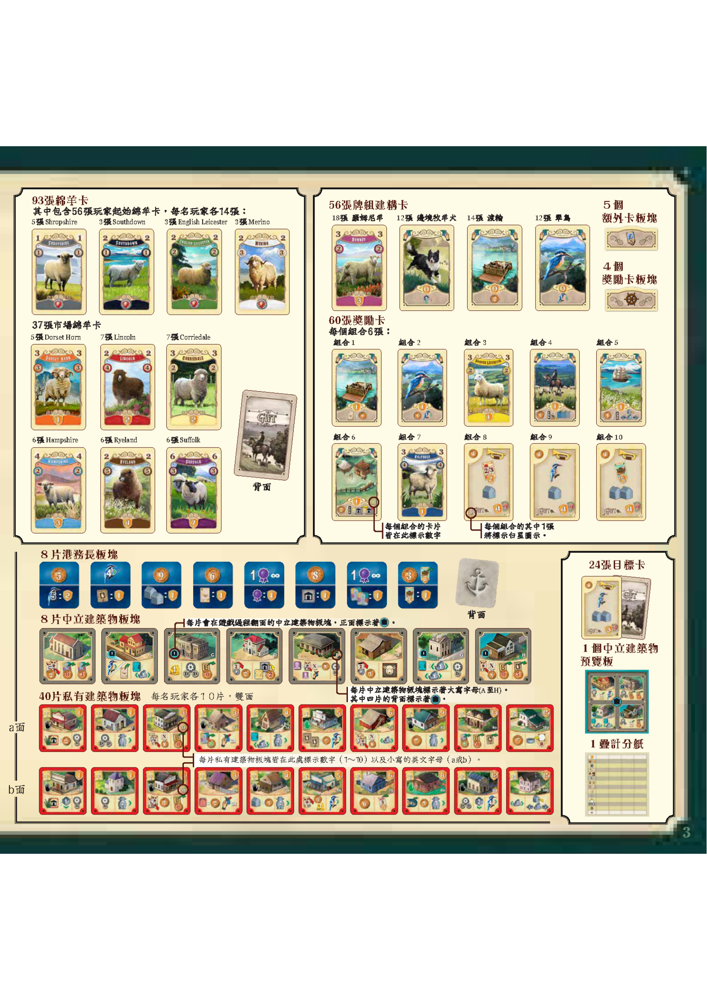
93張綿羊卡
其中包括56張玩家起始綿羊卡，每名玩家各14張：
- 5張 Shropshire
- 3張 Southdown
- 3張 English Leicester
- 3張 Merino
卡面牌名依序為：SHROPSHIRE、SOUTHDOWN、ENGLISH LEICESTER、MERINO。
37張市場綿羊卡
- 5張 Dorset Horn
- 7張 Lincoln
- 7張 Corriedale
- 6張 Hampshire
- 6張 Ryeland
- 6張 Suffolk
圖示旁另附一張卡背照片，下方標示「背面」，卡背印有「GWT」字樣。
56張牌組建構卡
- 18張 墨姆尼羊（卡面牌名：PERENDALE）
- 12張 邊境牧羊犬
- 14張 渡輪
- 12張 翠鳥
5個額外卡板塊
4個獎勵卡板塊
60張獎勵卡
每個組合6張：
- 組合1
- 組合2
- 組合3（卡面牌名：ENGLISH LEICESTER）
- 組合4
- 組合5
- 組合6
- 組合7
- 組合8
- 組合9
- 組合10
每個組合的卡片皆在此標示數字
每個組合的其中1張將標示白星圖示。
8片港務長板塊
圖示末另附一塊版塊背面照片，下方標示「背面」。
8片中立建築物板塊
每片會在遊戲過程翻面的中立建築物板塊，正面標示著〔藍綠色圓形圖示〕。
每片中立建築物板塊標示著大寫字母(A至H)，其中四片的背面標示著〔藍綠色圓形圖示〕。
40片私有建築物板塊 每名玩家各10片，雙面
左側標示兩排：a面、b面
每片私有建築物板塊皆在此處標示數字(1~10)以及小寫的英文字母(a或b)
24張目標卡
1個中立建築物預覽板
1疊計分紙
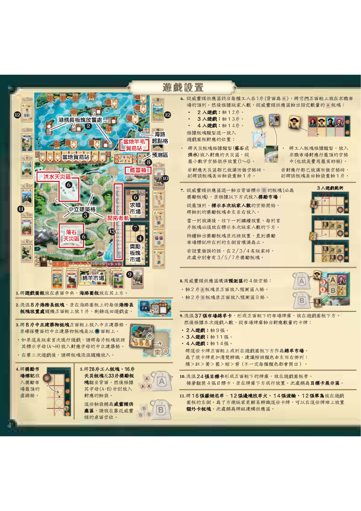
遊戲設置
遊戲圖板標註（圖版圖樣上的標籤）
- 港務長板塊放置處〔標記②〕
- 當地羊毛貿易站
- 當地貿易站
- 海路起點格
- 預測區〔標記⑧〕
- 威靈頓
- 洪水天災區〔標記⑥〕
- 落石天災區〔標記⑥〕
- 中立建築格〔標記③〕
- 求職市場〔標記⑥〕
- 獎勵板塊市場〔標記⑦、④〕
- 綿羊市場〔標記⑨〕
- 開拓者軌〔標記⑬〕
- 圖板兩側卡片列旁的圓形數字標記：左側⑫、⑪，右側⑫、⑩
設置步驟（圖版下方左欄，步驟1～5）
- 將遊戲圖板放在桌面中央，海路圖板在其上方。
- 洗混8片港務長板塊，並在海路圖板上的每個港務長板塊放置處隨機正面朝上放1片，剩餘返回遊戲盒。
- 將8片中立建築物板塊正面朝上放入中立建築格，並確保雙面的中立建築物板塊是以〔圖示：黑底圓形「I」〕面朝上。
- 如果這是玩家首次進行遊戲，請將每片板塊依照其標示字母(A～H)放入對應字母的中立建築格。 - 在第二次遊戲後，請將板塊洗混隨機放入。
- 將獎勵市場標記放入獎勵市場最頂的虛線格。
- 將28片工人板塊、16片天災板塊及33片獎勵板塊翻至背面，然後根據其字母(A、B)分別放入對應的抽袋。
這些抽袋稱為威靈頓供應區，請放在靠近威靈頓的桌面空位。
設置步驟（右欄，步驟6～11）
- 從威靈頓供應區找出每種工人各1片(背面為〔圖示：A〕)，將它們正面朝上放在求職市場的頂列。然後根據玩家人數，從威靈頓供應區抽出指定數量的〔圖示：A〕板塊：
- 2人遊戲：抽12片。 - 3人遊戲：抽13片。 - 4人遊戲：抽14片。
根據板塊類型逐一放入遊戲圖板對應的位置：
- 將天災板塊根據類型(落石或洪水)放入對應的天災區，從最小數字空格依序放置(1～4)。若對應天災區都已放滿而無空格時，則將該板塊丟回抽袋重抽1片。 - 將工人板塊根據類型，放入求職市場對應行最頂的空格中(也就是費用最高那格)。若對應行都已放滿而無空格時，則將該板塊丟回抽袋重抽1片。
- 從威靈頓供應區逐一抽出背面標示〔圖示：B〕的板塊(必為獎勵板塊)，並根據以下方式放入獎勵市場：
從最頂列、標示本次玩家人數的空格開始，將抽到的獎勵板塊由左至右放入。
當一列放滿後，往下一列繼續放置。每列首片板塊必須放在標示本次玩家人數的下方。
持續抽出獎勵板塊並比照放置，直到獎勵市場標記所在列的左側皆填滿為止。
若設置無誤的話，在2/3/4名玩家時，此處分別會有3/5/7片獎勵板塊。
> 圖示說明（步驟7右側）：3人遊戲範例（三張獎勵市場擺放過程圖）
- 用威靈頓供應區填滿預測區的4個空格：
- 抽2片〔圖示：A〕板塊並正面放入預測區A格。 - 抽2片〔圖示：B〕板塊並正面放入預測區B格。
- 洗混37張市場綿羊卡，形成正面朝下的市場牌庫，放在遊戲圖板下方。然後根據本次遊戲人數，從市場牌庫抽出對應數量的卡牌：
- 2人遊戲：抽9張。 - 3人遊戲：抽11張。 - 4人遊戲：抽14張。
將這些卡牌正面朝上成列在遊戲圖板下方作為綿羊市場。為了使卡牌更加清楚辨識，建議按照顏色由左而右排列：橘＞紅＞黃＞藍＞棕＞紫（不一定每種顏色都會開出）。
- 洗混24張目標卡形成正面朝下的牌庫，放在遊戲圖板旁。接著翻開4張目標卡，並在牌庫下方成行放置。此處稱為目標卡展示區。
- 將16張羅姆尼羊、12張邊境牧羊犬、14張渡輪、12張翠鳥放在遊戲圖板的左側。為了方便玩家更輕易辨識這些卡牌，可以在這些牌堆上放置額外卡板塊。此處稱為牌組建構供應區。
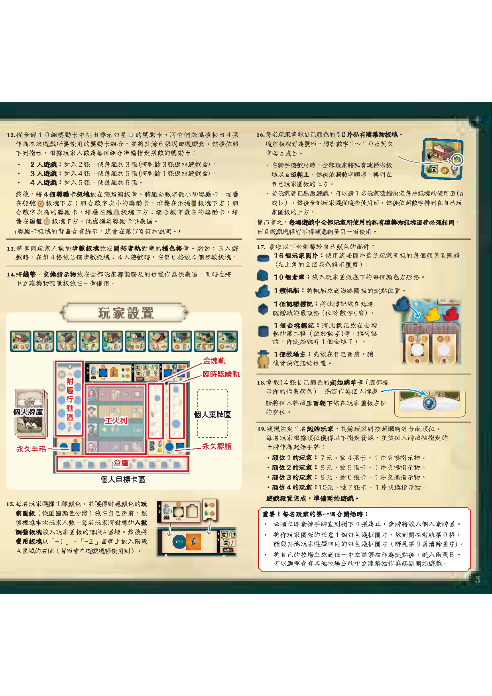
12. 從全部 10 組獎勵卡中挑出標示白星〔白星圖示〕的獎勵卡。將它們洗混後抽出 4 張作為本次遊戲所要使用的獎勵卡組合，並將其餘 6 張返回遊戲盒。然後依照下列指示，根據玩家人數為每個組合準備指定張數的獎勵卡：
- 2 人遊戲：加入 2 張，使每組共 3 張（將剩餘 3 張返回遊戲盒）。
- 3 人遊戲：加入 4 張，使每組共 5 張（將剩餘 1 張返回遊戲盒）。
- 4 人遊戲：加入 5 張，使每組共 6 張。
然後，將 4 個獎勵卡板塊放在海路圖板旁。將組合數字最小的獎勵卡，堆疊在船舵〔船舵圖示〕板塊下方；組合數字次小的獎勵卡，堆疊在酒桶〔酒桶圖示〕板塊下方；組合數字次高的獎勵卡，堆疊在鐘〔鐘圖示〕板塊下方；組合數字最高的獎勵卡，堆疊在羅盤〔羅盤圖示〕板塊下方。此處稱為獎勵卡供應區。（獎勵卡板塊的背面含有提示，這會在第17頁詳細說明。）
13. 將等同玩家人數的步數板塊放在開拓者軌對應的橘色格旁。例如：3 人遊戲時，在第 4 格放 3 個步數板塊；4 人遊戲時，在第 6 格放 4 個步數板塊。
14. 將錢幣、交換指示物放在全部玩家都能觸及的位置作為供應區。同時也將中立建築物預覽板放在一旁備用。
玩家設置（圖示）
圖示標註（紅色標籤與指線）：
- 金塊軌
- 臨時認證軌
- 附屬行動區
- 工人列
- 個人棄牌區
- 永久羊毛
- 永久認證
- 倉庫
- 個人目標卡區
- 個人牌庫（玩家圖板左側牌庫照片的標註）
15. 每名玩家選擇 1 種顏色，並獲得對應顏色的玩家圖板（從圓圈顏色分辨）放在自己面前。然後根據本次玩家人數，每名玩家將對應的人數調整板塊放入玩家圖板的階段 A 區域。然後將費用板塊以「-1」、「-2」面朝上放入階段 A 區域的右側（背面會在遊戲過程使用到）。
（步驟 15 右側配圖：人數調整板塊與費用板塊放入階段 A 區域的照片，圖上無可辨識規則文字。）
16. 每名玩家拿取自己顏色的 10 片私有建築物板塊。這些板塊皆為雙面，標有數字 1～10 及英文字母 a 或 b。
- 在新手遊戲局時，全部玩家將私有建築物板塊以 a 面朝上，然後依照數字順序，排列在自己玩家圖板的上方。
- 若玩家皆已熟悉遊戲，可以請 1 名玩家隨機決定每片板塊的使用面（a 或 b），然後全部玩家遵從這些使用面，然後依照數字排列在自己玩家圖板的上方。
簡而言之，每場遊戲中全部玩家所使用的私有建築物板塊面皆必須相同，而且遊戲過程皆不得隨意翻至另一面使用。
17. 拿取以下全部屬於自己顏色的配件：
- 16 個玩家圓片：使用這些圓片蓋住玩家圖板的每個顏色圓圈格（左上角的 2 個灰色格不覆蓋）。
- 10 個倉庫：放入玩家圖板底下的每個顏色方形格。
- 1 艘帆船：將帆船放到海路圖板的起點位置。
- 1 個認證標記：將此標記放在臨時認證軌的最頂格（位於數字 0 旁）。
- 1 個金塊標記：將此標記放在金塊軌的第二格（位於數字 1 旁，換句話說，你起始就有 1 個金塊了）。
- 1 個牧場主：先放在自己面前，稍後會決定起始位置。
（步驟 17 右側配圖：帆船放到海路圖板起點、認證標記與金塊標記起始格的照片，圖上無可辨識規則文字。）
18. 拿取 14 張自己顏色的起始綿羊卡（底部標示你的代表顏色），洗混作為個人牌庫，請將個人牌庫正面朝下放在玩家圖板左側的空位。
（步驟 18 右側配圖：個人牌庫放置位置的照片，圖上無可辨識規則文字。）
19. 隨機決定 1 名起始玩家，其餘玩家則按照順時針分配順位。每名玩家根據順位獲得以下指定資源，並從個人牌庫抽指定的卡牌作為起始手牌：
- 順位 1 的玩家：7 元、抽 4 張卡、1 片交換指示物。
- 順位 2 的玩家：8 元、抽 5 張卡、1 片交換指示物。
- 順位 3 的玩家：9 元、抽 6 張卡、1 片交換指示物。
- 順位 4 的玩家：10 元、抽 7 張卡、1 片交換指示物。
遊戲設置完成，準備開始遊戲。
重要！每名玩家的第一回合開始時：
- 必須立即棄掉手牌直到剩下 4 張為止，棄牌將放入個人棄牌區。
- 將你玩家圖板的任意 1 個白色邊框圓片，放到開拓者軌第 0 格，能與其他玩家選擇相同的白色邊框圓片（詳見第 9 頁清除圓片）。
- 將自己的牧場主放到任一中立建築物作為起點後，進入階段 B。可以選擇含有其他牧場主的中立建築物作為起點開始遊戲。
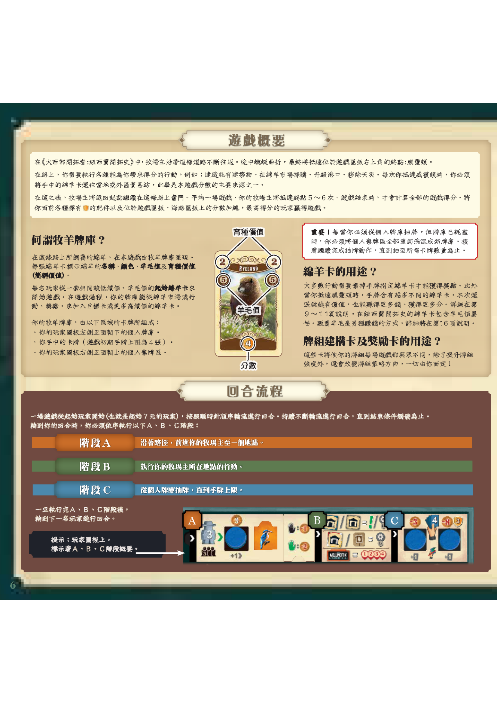
遊戲概要
〔頂部米色段落框：〕
在《大西部開拓者：紐西蘭開拓史》中，牧場主沿著這條道路不斷往返。途中蜿蜒曲折，最終將抵達位於遊戲圖板右上角的終點：威靈頓。 在路上，你需要執行各種能為你帶來得分的行動，例如：建造私有建築物、在綿羊市場採購、升級港口、移除天災。每次你抵達威靈頓時，你必須將手中的綿羊卡運往當地或外國貿易站，此舉是本遊戲分數的主要來源之一。 在這之後，牧場主將返回起點繼續在這條路上奮鬥。平均一場遊戲，你的牧場主將抵達終點 5～6 次。遊戲結束時，才會計算全部的遊戲得分。將你面前各種標有〔橙色圓形圖示〕的配件以及位於遊戲圖板、海路圖板上的分數加總，最高得分的玩家贏得遊戲。
何謂牧羊牌庫？
在這條路上所飼養的綿羊，在本遊戲由牧羊牌庫呈現。每張綿羊卡標示綿羊的名稱、顏色、羊毛值及育種價值（簡稱價值）。
每名玩家從一套相同較低價值、羊毛值的起始綿羊卡來開始遊戲。在遊戲過程，你的牌庫能從綿羊市場或行動、獎勵，來加入目標卡或更多高價值的綿羊卡。
你的牧羊牌庫，由以下區域的卡牌所組成：
- 你的玩家圖板左側正面朝下的個人牌庫。
- 你手中的卡牌（遊戲初期手牌上限為 4 張）。
- 你的玩家圖板右側正面朝上的個人棄牌區。
〔中間綿羊卡示意圖：卡名印「RYELAND」，上方標籤「育種價值」以線條指向卡片左右上角圓框中的「2」；標籤「羊毛值」指向卡片左右兩側圓框中的「5」；卡片底部橙色盾形徽章印「4」，其下標籤「分數」〕
〔右上紅框提示：〕
重要｜每當你必須從個人牌庫抽牌，但牌庫已耗盡時，你必須將個人棄牌區全部重新洗混成新牌庫。接著繼續完成抽牌動作，直到抽至所需卡牌數量為止。
綿羊卡的用途？
大多數行動需要棄掉手牌指定綿羊卡才能獲得獎勵。此外當你抵達威靈頓時，手牌含有越多不同的綿羊卡，本次運送就越有價值，也能賺得更多錢、獲得更多分。詳細在第 9～11 頁說明。在紐西蘭開拓史的綿羊卡包含羊毛值屬性。販賣羊毛是另種賺錢的方式，詳細將在第 16 頁說明。
牌組建構卡及獎勵卡的用途？
這些卡將使你的牌組每場遊戲都與眾不同，除了提升牌組強度外，還會改變牌組策略方向，一切由你而定！
回合流程
〔下方深褐色區塊：〕
一場遊戲從起始玩家開始(也就是起始 7 元的玩家)，按照順時針順序輪流進行回合。持續不斷輪流進行回合，直到結束條件觸發為止。 輪到你的回合時，你必須依序執行以下 A、B、C階段：
階段A 沿著路徑，前進你的牧場主至一個地點。
階段B 執行你的牧場主所在地點的行動。
階段C 從個人牌庫抽牌，直到手牌上限。
一旦執行完 A、B、C階段後， 輪到下一名玩家進行回合。
〔深色提示框，右側箭頭指向玩家圖板照片：〕
提示：玩家圖板上，
標示著A、B、C階段概要。
〔右下為玩家圖板照片，上方以「A」「B」「C」三個色塊標示對應欄位：A 欄可見工人列（印「3」）、三名工人圖示、「+1」箭頭、藍色圓片格、翠鳥立於橙色建築圖樣及手掌圖示「-1」「-2」；B 欄可見建築圖示、「/」、「=」與齒輪燈泡圖示、紅框「KELMITH」字樣及「1 2 3 4」數字標記；C 欄可見藍色圓片格、錢幣「-3」「-8」與盾牌「3」、手持藍色卡牌「4」、「+1」及鳥類圖樣〕
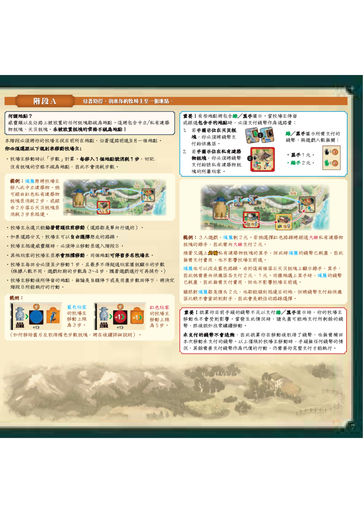
階段A 沿著路徑，前進你的牧場主至一個地點。
何謂地點？
威靈頓以及沿路上被放置的任何板塊都視為地點。這將包含中立/私有建築物板塊、天災板塊。未被放置板塊的空格不視為地點！
本階段必須將你的牧場主從目前所在地點，沿著道路前進至另一個地點。 你必須遵照以下規則來移動牧場主：
- 牧場主移動時以「步數」計算。每移入1個地點就消耗1步，切記沒有板塊的空格不視為地點，因此不會消耗步數。
範例：瑪麗想將牧場主移入此中立建築物。她可經由紅色私有建築物板塊並消耗2步，或經由2片落石天災板塊並消耗3步來抵達。
〔圖：路徑地圖，兩條藍色箭頭路線通往中立建築物板塊〕
- 牧場主永遠只能沿著箭頭往前移動（道路都是單向行進的）。
- 如果道路分叉，牧場主可以自由選擇想走的路線。
- 牧場主抵達威靈頓時，必須停止移動並進入階段B。
- 其他玩家的牧場主並不會阻擋移動，同個地點可停留多名牧場主。
- 牧場主每回合必須至少移動1步，且最多不得超過玩家圖板顯示的步數（根據人數不同，遊戲初期的步數為 3~4 步，隨著遊戲進行可再提升。）
- 牧場主移動後所停留的地點，無論是自願停下或是用盡步數而停下，將決定階段B所能執行的行動。
範例：
〔圖：玩家圖板步數區示意——左：數字「3」徽章、藍色圓片(+1)、橘底翠鳥圖板塊〕藍色玩家的牧場主移動上限為3步。
〔圖：玩家圖板步數區示意——數字「3」徽章、紅色「+1」圓片、橘色「+1」板塊〕紅色玩家的牧場主移動上限為5步。
(如何移除圓片及取得橘色步數板塊，將在後續詳細說明)。
重要！有些地點將包含綠／黑手圖示。當牧場主停留或經過包含手的地點時，必須支付錢幣作為過路費：
- 若手圖示位在天災板塊，你必須將錢幣支付給供應區。
- 若手圖示位在私有建築物板塊，你必須將錢幣支付給該私有建築物板塊的所屬玩家。
〔圖1：兩片天災板塊，分別標示綠手與黑手圖示〕 〔圖2：紅框私有建築物板塊，標示黑手圖示〕
綠／黑手圖示所需支付的錢幣，與遊戲人數無關：
- 黑手 1 元。
- 綠手 2 元。
〔圖示：黑手對應「=1」錢幣、綠手對應「=2」錢幣〕
範例：3人遊戲，瑪麗剩2元。若她選擇紅色路線將經過大維私有建築物板塊的綠手，因此需向大維支付2元。
〔圖：路徑地圖，藍色路線與紅色路線箭頭，途經落石天災板塊、大維與約翰的私有建築物板塊〕
接著又遇上約翰私有建築物板塊的黑手，但此時瑪麗的錢幣已耗盡，因此無需支付費用，也不影響牧場主前進。
瑪麗也可以改走藍色路線。由於這兩個落石天災板塊上顯示綠手、黑手，因此她需要向供應區各支付2元、1元。同樣地遇上黑手時，瑪麗的錢幣已耗盡，因此無需支付費用，但也不影響牧場主前進。
雖然對瑪麗都是損失2元，也都能順利抵達目的地，但將錢幣支付給供應區比較不會資助到對手，因此會是較佳的路線選擇。
重要！就算你目前手頭的錢幣不足以支付綠／黑手圖示時，你的牧場主移動也不會受到影響。當發生此情況時，請先盡可能地支付所剩餘的錢幣，然後就如往常繼續移動。
未支付的錢幣不會追朔，因此就算你在移動後取得了錢幣，也無需補回本次移動未支付的錢幣。以上僅限於牧場主移動時，手頭無任何錢幣的情況，其餘需要支付錢幣作為代價的行動，仍需要你完整支付才能執行。
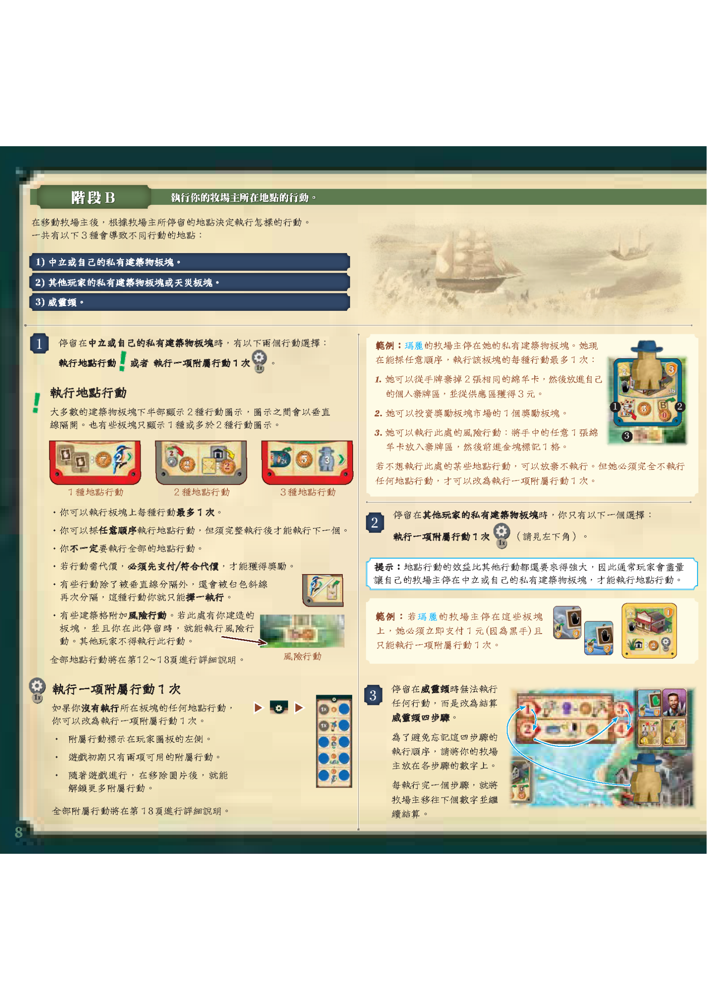
階段 B
執行你的牧場主所在地點的行動。
在移動牧場主後，根據牧場主所停留的地點決定執行怎樣的行動。 一共有以下 3 種會導致不同行動的地點：
1) 中立或自己的私有建築物板塊。 2) 其他玩家的私有建築物板塊或天然板塊。 3) 威靈頓。
（頁首右側背景插圖：海上帆船）
❶ 停留在中立或自己的私有建築物板塊時，有以下兩個行動選擇：
執行地點行動（旁有綠色「！」標記）或者 執行一項附屬行動 1 次（旁有齒輪「×1」圖示）。
執行地點行動（段落左側有綠色「！」標記）
大多數的建築物板塊下半部顯示 2 種行動圖示，圖示之間會以垂直線隔開。也有些板塊只顯示 1 種或多於 2 種行動圖示。
（三張建築物板塊下半部示例圖，圖說依序為）
- 1 種地點行動
- 2 種地點行動
- 3 種地點行動
- 你可以執行板塊上每種行動最多 1 次。
- 你可以採任意順序執行地點行動，但須完整執行後才能執行下一個。
- 你不一定要執行全部的地點行動。
- 若行動需代價，必須先支付/符合代價，才能獲得獎勵。
- 有些行動除了被垂直線分隔外，還會被白色斜線再次分隔，這種行動你就只能擇一執行。（右圖：被白色斜線分隔成兩半的行動圖示）
- 有些建築格附加風險行動。若此處有你建造的板塊，並且你在此停留時，就能執行風險行動。其他玩家不得執行此行動。（右圖箭頭指向建築格下半部，圖說：風險行動）
全部地點行動將在第 12~18 頁進行詳細說明。
執行一項附屬行動 1 次（標題左側為齒輪「×1」圖示）
如果你沒有執行所在板塊的任何地點行動，你可以改為執行一項附屬行動 1 次。（右圖：▶ ⚙ ▶ 圖示與玩家圖板左側的附屬行動列表）
- 附屬行動標示在玩家圖板的左側。
- 遊戲初期只有兩項可用的附屬行動。
- 隨著遊戲進行，在移除圓片後，就能解鎖更多附屬行動。
全部附屬行動將在第 18 頁進行詳細說明。
範例：瑪麗的牧場主停在她的私有建築物板塊。她現在能採任意順序，執行該板塊的每種行動最多 1 次：
1. 她可以從手牌棄掉 2 張相同的綿羊卡，然後放進自己的個人棄牌區，並從供應區獲得 3 元。
2. 她可以投資獎勵板塊市場的 1 個獎勵板塊。
3. 她可以執行此處的風險行動：將手中的任意 1 張綿羊卡放入棄牌區，然後前進金塊標記 1 格。
若不想執行此處的某些地點行動，可以放棄不執行。但她必須完全不執行任何地點行動，才可以改為執行一項附屬行動 1 次。
（右圖：戴帽的牧場主棋子立於玩家圖板上，圖上以黑色圓圈數字 ❶❷❸ 標示對應的行動位置）
❷ 停留在其他玩家的私有建築物板塊時，你只有以下一個選擇：
執行一項附屬行動 1 次（齒輪「×1」圖示）（請見左下角）。
提示：地點行動的效益比其他行動都還要來得強大，因此通常玩家會盡量讓自己的牧場主停在中立或自己的私有建築物板塊，才能執行地點行動。
範例：若瑪麗的牧場主停在這些板塊上，她必須立即支付 1 元 (因為黑手) 且只能執行一項附屬行動 1 次。
（右圖：兩塊帶有黑手掌圖示與「0／4」「0／2」盾牌費用標示的天然板塊，以及一塊黃色建築物板塊）
❸ 停留在威靈頓時無法執行任何行動，而是改為結算威靈頓四步驟。
為了避免忘記這四步驟的執行順序，請將你的牧場主放在各步驟的數字上。 每執行完一個步驟，就將牧場主移往下個數字並繼續結算。
（右圖：威靈頓板塊，其上紅色數字 ❶❷❸❹ 以藍色箭頭指示結算順序，戴帽的牧場主棋子立於板塊旁，旁邊另有卡牌插圖）
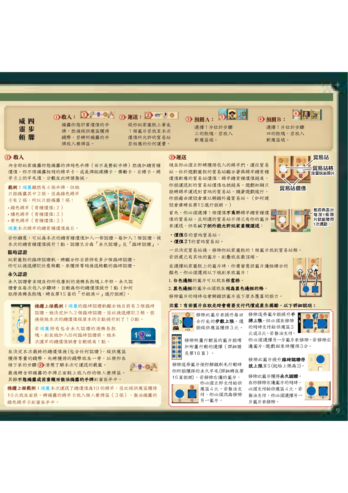
威靈頓四步驟
（左側直排標題兩行：威靈頓、四步驟；各步驟標題旁附對應配件照片）
①收入：
揭露你想計算價值的手牌，然後從供應區獲得錢幣，並將所揭露的手牌放入棄牌區。
②運送：
從你玩家圖板上拿走1個圓片並放至本次價值所允許的貿易站並相應的任何運費。
③預測A：
選擇1片位於步驟三的板塊，並放入對應區域。
④預測B：
選擇1片位於步驟四的板塊，並放入對應區域。
①收入
向全部玩家揭露你想揭露的非同色手牌（而不是整副手牌）然後加總育種價值。你不得揭露相同的綿羊卡，或是牌組建構卡、獎勵卡、目標卡。綿羊卡上的羊毛值、分數在此時請無視。
範例：瑪麗雖然有4張手牌，但她只能揭露其中3張。因為綠色綿羊卡有2張，所以只能揭露1張：
· 綠色綿羊（育種價值：2）
· 橘色綿羊（育種價值：3）
· 黃色綿羊（育種價值：3）
瑪麗本次綿羊的總育種價值為8。
若你願意，可以為本次的總育種價值加入一些認證。每加入1個認證，使本次的總育種價值提升1點。認證又分為「永久認證」及「臨時認證」。
臨時認證
玩家圖板的臨時認證軌，將顯示你目前持有多少個臨時認證。 你可以後退標記任意格數，來獲得等同後退格數的臨時認證。
永久認證
永久認證會出現在你所收集到的港務長板塊上半部。永久認證會在每次收入步驟時，自動為你的總價值提升1點（如何取得港務長板塊，將在第15頁的「升級港口」進行說明）。
接續上個範例：瑪麗的臨時認證軌顯示她目前有3個臨時認證。她決定加入2個臨時認證，因此後退標記2格，然後使她本次的總價值從原本的8點提升到了10點。
若瑪麗持有包含永久認證的港務長板塊，則在她加入任何臨時認證前，她本次運羊的總價值就會自動提高1點。
在決定本次最終的總價值後（包含任何認證），從供應區獲得等量的錢幣。先將獲得的錢幣放在一旁，以便你在接下來的步驟②清楚了解本次可運送的範圍。 最後將全部揭露的手牌正面朝上放入你的個人棄牌區。 其餘不想揭露或因重複而無法揭露的手牌則留在手中。
接續上個範例：瑪麗本次運送了總價值為10的綿羊，因此從供應區獲得10元放在面前。將揭露的綿羊卡放入個人棄牌區（3張），無法揭露的綠色綿羊卡則留在手中。
②運送
現在你必須立即將獲得收入的綿羊們，運往貿易站。位於遊戲圖板的貿易站顯示著與綿羊總育種價值對應的貿易站價值：綿羊總育種價值越高，你能運送到的貿易站價值也就越高。遊戲初期只能將綿羊運送到當地的貿易站，隨著遊戲進行，你能藉由建設倉庫以解鎖外圍貿易站。（如何建設倉庫將在第15進行說明。）
右圖標示：貿易站；貿易站格——放置玩家圓片；貿易站價值。
首先，你必須選擇1個價值不高於綿羊總育種價值的貿易站，且所選的貿易站不得已有你的圓片來運送，但有以下例外能允許玩家重複運送：
- 價值0的當地貿易站。
- 價值21的當地貿易站。
一旦決定貿易站後，移除你玩家圖板的1個圓片放到貿易站格。若該處已有其他的圓片，則疊放在最頂端。
右圖標示：藍底色表示每放1個圓片就能獲得1次獎勵。
在選擇玩家圖板上的圓片時，你需留意該圓片邊框標示的顏色。你必須遵照以下規則來放圓片：
- 白色邊框的圓片可以放在任意格。
- 黑色邊框的圓片必須放在同為黑色邊框的格。
移除圓片的同時也會解鎖該圓片底下原本覆蓋的能力。
注意：有些圓片在取走時會需要支付代價或產生獎勵，以下詳細說明：
（紅框內容，各項均附玩家圖板對應圓片格照片）
- 移除此圓片來提升每回合行走的步數上限。還能從供應區獲得3元。〔照片：證書軌「3」與圓片格「+1」〕
- 移除附屬行動區的圓片能增加附屬行動的選擇（詳細請見第18頁）。〔照片：玩家圖板附屬行動區〕
- 移除這些圓片使你解鎖剃毛行動時你所能獲得的永久羊毛(詳細將在第16頁說明)。若移除右邊的圓片，你必須立即支付給供應區4元。若無法支付，你必須改為移除另一圓片。〔照片：兩個圓片格與「4」錢幣〕
- 移除這些圓片能提升手牌上限。但必須在移除的同時支付給供應區3元或8元。若無法支付，你必須選擇另一片圓片來移除。若移除右邊圓片，遊戲結束時獲得3分。〔照片：標「C」的圓片格，含「-3」錢幣、手牌「4」、「-8」錢幣與「3」分盾形〕
- 移除此圓片提升臨時認證存放上限至5(起始上限為3)。〔照片：認證軌「4」與圓片格〕
- 移除此圓片獲得永久認證。在你移除左邊圓片的同時，必須支付給供應區4元。若無法支付，你必須選擇另一片圓片來移除。〔照片：兩個圓片格與「-4」錢幣〕
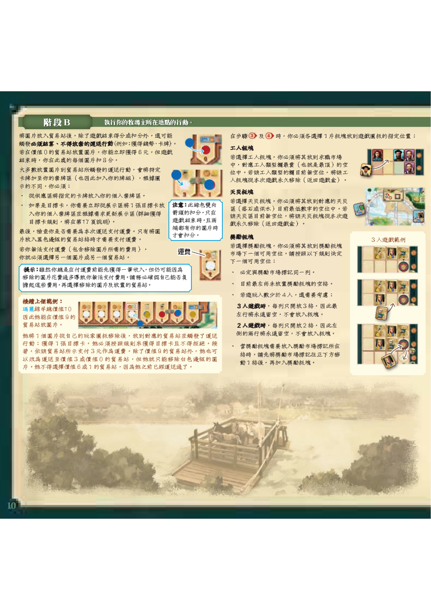
階段 B
〔綠色標題橫幅，右側副標題：〕執行你的牧場主所在地點的行動。
〔左欄：〕
將圓片放入貿易站後，除了遊戲結束得分或扣分外，還可能觸發必須結算、不得放棄的運送行動(例如：獲得錢幣、卡牌)。若在價值 0 的貿易站放置圓片，你能立即獲得 6 元，但遊戲結束時，你在此處的每個圓片扣 8 分。
大多數放置圓片到貿易站所觸發的運送行動，會將特定卡牌加至你的棄牌區（也因此加入你的牌組），根據圖示的不同，你必須：
- 從供應區將指定的卡牌放入你的個人棄牌區。
- 如果是目標卡，你需要立即從展示區將 1 張目標卡放入你的個人棄牌區並根據需求更新展示區(詳細獲得目標卡規則，將在第 17 頁說明)。
最後，檢查你是否需要為本次運送支付運費。只有將圓片放入黑色邊框的貿易站格時才需要支付運費。若你無法支付運費（包含移除圓片所需的費用），你就必須選擇另一個圓片或另一個貿易站。
〔中欄上方照片一：貿易站格上藍色圓片以箭頭指向格內紅色圓片；照片二：兩相鄰貿易站格間有綠色雙向箭頭，兩側各有一枚藍色圓片。照片下藍框提示：〕
注意：此綠色雙向箭頭的扣分，只在遊戲結束時，且兩端都有你的圓片時才會扣分。
〔中欄下方照片：一個貿易站格，左側標示文字：〕運費
〔左欄下方藍框提示：〕
提示：雖然你總是在付運費前能先獲得一筆收入，但仍可能因為移除的圓片花費過多導致你無法支付費用。請務必確認自己能否負擔起這些費用，再選擇移除的圓片及放置的貿易站。
〔左下棕色粗體標題：〕
接續上個範例：
〔範例框，框內右側嵌有一排貿易站照片，其中一格以紅框標示：〕
瑪麗綿羊總價值10因此她能在價值 9 的貿易站放圓片。
她將 1 個圓片從自己的玩家圖板移除後，放到對應的貿易站並觸發了運送行動：獲得 1 張目標卡。她必須按照規則來獲得目標卡且不得拒絕。接著，依該貿易站所示支付 3 元作為運費。除了價值9的貿易站外，她也可以改為運送至價值 3 或價值 0 的貿易站，但她就只能移除白色邊框的圓片。她不得選擇價值 6 或 1 的貿易站，因為她之前已經運送過了。
〔右欄：〕
在步驟〔3〕及〔4〕時，你必須各選擇 1 片板塊放到遊戲圖板的指定位置：
工人板塊
若選擇工人板塊，你必須將其放到求職市場中，對應工人類型欄最貴（也就是最頂）的空位中。若該工人類型的欄目前無空位，將該工人板塊從本次遊戲永久移除（返回遊戲盒）。
天災板塊
若選擇天災板塊，你必須將其放到對應的天災區（落石或洪水）目前最低數字的空位中。若該天災區目前無空位，將該天災板塊從本次遊戲永久移除（返回遊戲盒）。
獎勵板塊
若選擇獎勵板塊，你必須將其放到獎勵板塊市場下一個可用空位。請按照以下規則決定下一個可用空位：
- 必定與獎勵市場標記同一列。
- 目前最左尚未放置獎勵板塊的空格。
- 若遊玩人數少於 4 人，還需要考慮：
3 人遊戲時，每列只開放 3 格，因此最左行將永遠留空，不會放入板塊。
2 人遊戲時，每列只開放 2 格，因此左側的兩行將永遠留空，不會放入板塊。
- 當獎勵板塊需要放入獎勵市場標記所在格時，請先將獎勵市場標記往正下方移動 1 格後，再加入獎勵板塊。
〔頁面最右側淺色方框，標題：〕
3人遊戲範例
〔框內為三張獎勵市場照片，依序展示：有工人板塊與「5」標記的市場列；一枚工人板塊放入市場；市場標記下移並放入工人板塊的完成狀態。〕
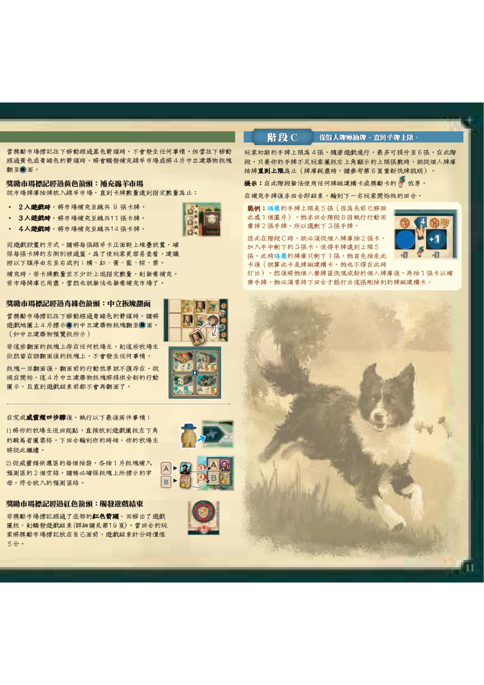
〔注：页面顶部有一条无文字的绿色横条（章节标题栏样式），其上未见标题文字。〕
當獎勵市場標記往下移動經過黑色箭頭時，不會發生任何事情。但當往下移動經過黃色或青綠色的箭頭時，將會觸發補充綿羊市場或將 4 片中立建築物板塊翻至●面。
〔注：●为原文中的黑色圆形图示。〕
獎勵市場標記經過黃色箭頭：補充綿羊市場
從市場牌庫抽牌放入綿羊市場，直到卡牌數量達到指定數量為止：
- 2 人遊戲時，將市場補充至總共 9 張卡牌。
- 3 人遊戲時，將市場補充至總共 11 張卡牌。
- 4 人遊戲時，將市場補充至總共 14 張卡牌。
同遊戲設置的方式，請將每張綿羊卡正面朝上堆疊放置，確保每張卡牌的左側別被遮蓋。為了使玩家更容易查看，建議按以下順序由左至右成列：橘、紅、黃、藍、棕、紫。
補充時，若卡牌數量並不少於上述指定數量，則無需補充。若市場牌庫已用盡，當然也就無法也無需補充市場了。
〔右側配圖：綿羊市場卡牌照片，无可辨文字。〕
獎勵市場標記經過青綠色箭頭：中立板塊翻面
當獎勵市場標記往下移動經過青綠色的箭頭時，請將遊戲地圖上 4 片標示●的中立建築物板塊翻至●面。（如中立建築物預覽板所示）
若這些翻面的板塊上存在任何牧場主，則這些牧場主依然留在該翻面後的板塊上，不會發生任何事情。
板塊一旦翻面後，翻面前的行動效果就不復存在，從現在開始，這 4 片中立建築物板塊將提供全新的行動圖示，且直到遊戲結束前都不會再翻面了。
〔右側配圖：上方为游戏地图翻面示意照片；下方为 4 片翻面后中立建築物板塊的照片，无可辨文字。〕
在完成威靈頓四步驟後，執行以下最後兩件事情：
1) 將你的牧場主返回起點，直接放到遊戲圖板左下角的騎馬者圖案格。下回合輪到你的時候，你的牧場主將從此繼續。
2) 從威靈頓供應區的每個抽袋，各抽 1 片板塊補入預測區的 2 個空格。請務必確保板塊上所標示的字母，符合放入的預測區格。
〔右側配圖：字母板塊抽補示意圖，图中可辨「A」「B」字样。〕
獎勵市場標記經過紅色箭頭：觸發遊戲結束
若獎勵市場標記經過了底部的紅色箭頭，而移出了遊戲圖板，則觸發遊戲結束(詳細請見第19 頁)。當回合的玩家將獎勵市場標記放在自己面前，遊戲結束計分時價值 5 分。
〔右側配圖：紅色徽記圖案，盾牌上可辨數字「5」。〕
階段 C：從個人牌庫抽牌，直到手牌上限。
玩家初期的手牌上限為 4 張，隨著遊戲進行，最多可提升至 6 張。在此階段，只要你的手牌不足玩家圖板右上角顯示的上限張數時，就從個人牌庫抽牌直到上限為止（牌庫耗盡時，請參考第 6 頁重新洗牌說明）。
提示：在此階段無法使用任何牌組建構卡或獎勵卡的【圖示】效果。
在補充手牌後本回合即結束，輪到下一名玩家開始他的回合。
範例：瑪露的手牌上限是 5 張（因為先前已移除此處 1 個圓片）。她本回合階段 B 因執行行動而棄掉 2 張手牌，所以還剩下 3 張手牌。
因此在階段 C 時，就必須從個人牌庫抽 2 張卡，加入手中剩下的 3 張卡，使得手牌達到上限 5 張。此時瑪露的牌庫只剩下 1 張，她首先抽走此卡後（就算此卡是牌組建構卡，她也不得在此時打出），然後將她個人棄牌區洗混成新的個人牌庫後，再抽 1 張卡以補齊手牌。她必須等待下回合才能打出這張剛抽到的牌組建構卡。
〔範例右側配圖：玩家圖板右上角局部放大圖，图中可辨數字「4」與「+1」標記。〕
〔页面下方为占满本页下半的牧羊犬插画，无文字。〕
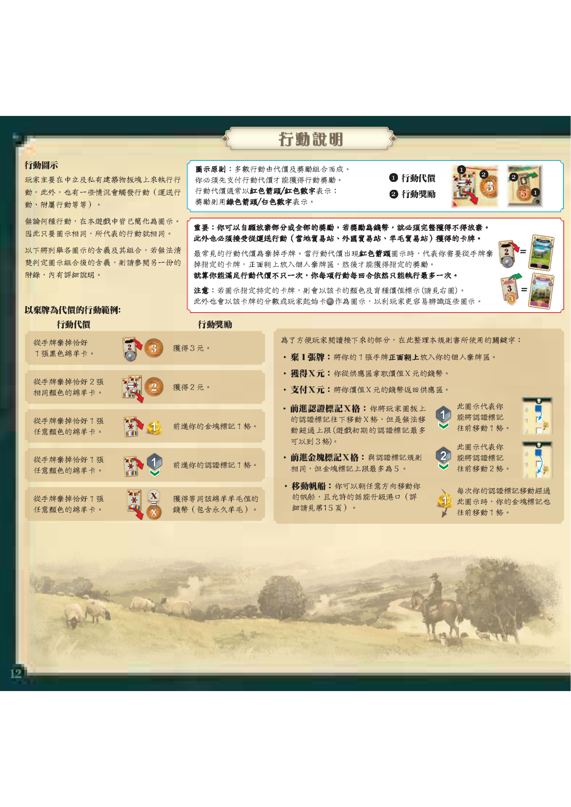
行動說明
行動圖示
玩家主要在中立及私有建築物板塊上來執行行動，此外，也有一些情況會觸發行動（運送行動、附屬行動等等）。
無論何種行動，在本遊戲中皆已簡化為圖示。因此只要圖示相同，所代表的行動就相同。
以下將列舉各圖示的含義及其組合，若無法清楚判定圖示組合後的含義，則請參閱另一份的附錄，內有詳細說明。
圖示原則：多數行動由代價及獎勵組合而成。
你必須先支付行動代價才能獲得行動獎勵。
行動代價通常以紅色箭頭／紅色數字表示；
獎勵則用綠色箭頭／白色數字表示。
❶ 行動代價 ❷ 行動獎勵
重要：你可以自願放棄部分或全部的獎勵，若獎勵為錢幣，就必須完整獲得不得放棄。此外也必須接受從運送行動（當地貿易站、外國貿易站、羊毛貿易站）獲得的卡牌。
最常見的行動代價為棄掉手牌。當行動代價出現紅色箭頭圖示時，代表你需要從手牌棄掉指定的卡牌，正面朝上放入個人棄牌區，然後才能獲得指定的獎勵。
就算你能滿足行動代價不只一次，你每項行動每回合依然只能執行最多一次。
注意：若圖示指定特定的卡牌，則會以該卡的顏色及育種價值標示 (請見右圖)。
此外也會以該卡牌的分數或玩家起始卡〔玩家起始卡圖示〕作為圖示，以利玩家更容易辨識這些圖示。
以棄牌為代價的行動範例:
| 行動代價 | 行動獎勵 | | --- | --- | | 從手牌棄掉恰好 1 張黑色綿羊卡。 | 獲得 3 元。 | | 從手牌棄掉恰好 2 張相同顏色的綿羊卡。 | 獲得 2 元。 | | 從手牌棄掉恰好 1 張任意顏色的綿羊卡。 | 前進你的金塊標記 1 格。 | | 從手牌棄掉恰好 1 張任意顏色的綿羊卡。 | 前進你的認證標記 1 格。 | | 從手牌棄掉恰好 1 張任意顏色的綿羊卡。 | 獲得等同該綿羊羊毛值的錢幣（包含永久羊毛）。 |
為了方便玩家閱讀接下來的部分，在此整理本規則書所使用的關鍵字：
- 棄 1 張牌：將你的 1 張手牌正面朝上放入你的個人棄牌區。
- 獲得X元：你從供應區拿取價值X元的錢幣。
- 支付X元：將你價值X元的錢幣返回供應區。
- 前進認證標記X格：你將玩家圖板上的認證標記往下移動X格，但是無法移動超過上限 (遊戲初期的認證標記最多可以到 3 格)。
- 前進金塊標記X格：與認證標記規則相同，但金塊標記上限最多為 5。
- 移動帆船：你可以朝任意方向移動你的帆船，且允許的話能升級港口（詳細請見第 15 頁）。
〔圖示：六角形「1」與綠色箭頭〕此圖示代表你能將認證標記往前移動 1 格。
〔圖示：六角形「2」與綠色箭頭〕此圖示代表你能將認證標記往前移動 2 格。
〔圖示：金塊「1」與弧形箭頭〕每次你的認證標記移動經過此圖示時，你的金塊標記也往前移動 1 格。
雇用工人
選擇 1 片位於求職市場的工人板塊，支付費用後將它放入自己玩家圖板中對應的工人列。雇用費顯示在該工人板塊所在列的右側，且還會根據執行的行動圖示調整雇用費：
- 〔圖示：工人板塊＋金幣「-0」〕= 不調整雇用費。
- 〔圖示：工人板塊＋金幣「-3」〕= 雇用費提升 3 元。
- 〔圖示：工人板塊＋金幣「-2」〕= 雇用費減免 2 元。
在支付雇用費後，將該工人板塊取回並由左而右放入玩家圖板對應的工人列空格。 請注意：玩家圖板已內建每種工人各 1 名，換句話說工人列的第一格已被佔據。
玩家圖板圖示（工人列與立即行動標註）
圖示上方標籤：立即行動
工人列名稱（圖示左側標籤，由上至下）：
- 牧羊人工列
- 工匠工列
- 水手工列
- 剝毛工人工人列
圖示指線標註文字：
- 支付 4 元，從市場加入 1 張藍色或棕色綿羊卡至你的個人牌庫頂
- 立即在綿羊市場採購
- 建造或升級建築物 1 次，每需 1 名工匠就支付 1 元
- 朝任意方向移動你的帆船最多 5 格，若允許的話，升級港口
- 從市場將 2 張分數 2 的綿羊卡或 1 張藍色/棕色綿羊卡加至你的個人棄牌區
- 前進你在開拓者軌的圓片 1 格
- 從供應區加入 1 張羅姆尼綿羊卡至你的個人棄牌區
範例：現在是階段 B，瑪麗在中立建築物 A。
① 〔圖示：工人板塊＋金幣「-0」〕在第一個雇用工人行動中，瑪麗想雇用 1 名水手。她雇用目前費用最低的 7 元水手。將該板塊放入玩家圖板的水手工人列目前最左側空格並觸發立即行動：棄掉任 1 張手中的綿羊卡，並前進認證標記 1 格。
② 〔圖示：工人板塊＋金幣「-3」〕該建築物還包含第二個雇用工人行動，因此她決定雇用 6 元那列的剝毛工人板塊。由於第二個雇用工人行動上顯示提升 3 元，因此瑪麗共需支付 9 元才能雇用此工人。將其放入對應工人列並從供應區加入 1 張羅姆尼綿羊卡至她的個人棄牌區。
③ 不幸地，瑪麗無法執行此棄牌獲得錢幣的行動，因為她手中沒有 2 張相同的綿羊卡，所以只能忍痛放棄。
（範例下方配圖：兩段水手工人列照片，示範工人板塊放入空格，無可辨識文字。）
當你將工人板塊放入對應的工人列時，如果該格顯示行動圖示，你必須立即決定是否執行該行動或放棄。
- 若工人列已滿，你就無法再雇用更多該類型的工人。
- 遊戲結束時，每個工人列的第 5 個工人板塊，使你獲得 4 分。
投資獎勵板塊
選擇 1 片位於獎勵市場的獎勵板塊，支付投資費後獲得其獎勵，並將該板塊放在自己玩家圖板旁。
但請遵循以下規則：
- 不能選擇目前獎勵市場標記所在列的獎勵板塊。
- 投資費顯示在該獎勵板塊的所在列右側，但還會因行動圖示的標示而進一步調整費用，請見以下圖示說明：
- 〔圖示：獎勵板塊＋金幣「-0」〕= 不調整投資費。
- 〔圖示：獎勵板塊＋金幣「-3」〕= 投資費提升 3 元。
重要：萬用工人可以被放入任意工人列，在獲得她之前，你需要先額外支付 1 金塊才能獲得。其他有額外條件/費用的獎勵板塊亦同。
全部出現在獎勵板塊的獎勵，將在附錄最後一頁進行說明。
範例：現在是階段 B，瑪麗在中立建築物 C（已經翻面了）。
① 〔圖示：獎勵板塊＋金幣「-0」〕她目前有 11 元及 1 片交換指示物。雖然她想要投資 5 元來獲得萬用工人，但她目前沒有任何金塊。所以改投資獲得 1 片交換指示物及遊戲結束獲得 4 分的獎勵板塊。
現在，她決定將這 2 片交換指示物組合，以獲得 1 個金塊，然後從手牌永久移除 1 張灰色綿羊卡（詳細請見第 18 頁）。
② 〔圖示：齒輪「1x」「1x」〕接著執行一項附屬行動 2 次，獲得 2 元。
③ 〔圖示：獎勵板塊＋金幣「-3」〕由於此行動圖示提升了投資費 3 元，因此她必須支付總共 8 元以及剛才取得的 1 個金塊，才能獲得她想要的萬用工人。最終，她將這名萬用工人放入想要的工人列中（若可以的話，執行立即行動）。
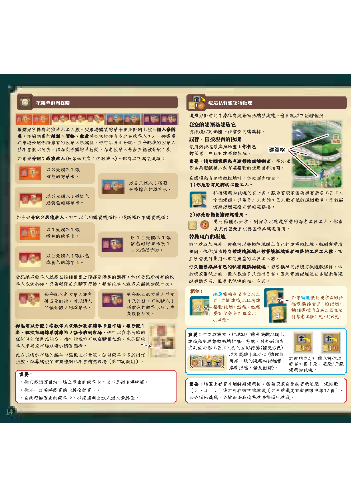
在綿羊市場採購
根據你所擁有的牧羊人工人數，從市場購買綿羊卡並正面朝上放入個人棄牌區。你能購買的種類、價格、數量將取決於你有多少名牧羊人工人。你需要在市場分配你所擁有的牧羊人來購買。你可以自由分配，且分配後的牧羊人並不會就此消失，但每次採購綿羊行動，每名牧羊人最多只能被分配1次。
如果你分配1名牧羊人（玩家必定有1名牧羊人），你有以下購買選項：
- 以3元購入1張橘色的綿羊卡。
- 以5元購入1張紅色或黃色的綿羊卡。
- 以9元購入1張藍色或棕色的綿羊卡。
如果你分配2名牧羊人，除了以上的購買選項外，還新增以下購買選項：
- 以1元購入1張橘色的綿羊卡。
- 以2元購入1張紅色或黃色的綿羊卡。
- 以10元購入1張紫色的綿羊卡及1片交換指示物。
分配越多牧羊人就能在該種買賣上獲得更優惠的選擇。如何分配所擁有的牧羊人取決於你，只要確保每次購買行動，每名牧羊人最多只能被分配一次。
- 若分配3名牧羊人並支付3元的話，可以購入2張分數2的綿羊卡。
- 若分配4名牧羊人並支付4元的話，可以購入1張紫色的綿羊卡及1片交換指示物。
你也可以分配1名牧羊人來添加更多綿羊卡至市場：每分配1名，就從市場綿羊牌庫抽2張卡放到市場。你可以在本行動的任何時刻使用此能力，換句話說你可以在購買之前，先分配牧羊人來補充市場以增加購買選擇。
此方式增加市場的綿羊卡張數並不受限，但若綿羊卡多於指定張數，就算觸發了補充機制也不會補充市場（第11頁說明）。
重要：
- 你只能購買目前市場上開出的綿羊卡，而不是從市場牌庫。
- 你不一定要將能買的卡牌全部買下。
- 在此行動買到的綿羊卡，必須面朝上放入個人棄牌區。
建造私有建築物板塊
選擇你面前的1片私有建築物板塊並建造。會出現以下兩種情況：
在空的建築格建造它
將板塊放到地圖上任意空的建築格。
或者，替換現有的板塊
使用該板塊替換掉地圖上你自己的任意1片私有建築物板塊。
重要：請勿隨意將私有建築物板塊翻面，務必確保本局遊戲每人私有建築物的使用面都相同。
在選擇私有建築物板塊前，你必須先檢查：
1)你是否有足夠的工匠工人。
私有建築物板塊的左上角，顯示著玩家需要擁有幾名工匠工人才能建造。只要你工人列的工匠人數不低於這個數字，你就能將該板塊建造在空的建築格。
2)你是否能負擔得起費用。
若行動圖示如左，則你本次建造所需的每名工匠工人，你需要支付2元至供應區作為建造費用。
替換現有的板塊
除了建造板塊外，你也可以替換掉地圖上自己的建築物板塊。規則與前者相同，但你僅需擁有被建造板塊與被替換板塊兩者相差的工匠工人數，而且所需支付費用也等同相差的工匠工人數。
你只能替換掉自己的私有建築物板塊。被替換掉的板塊將從遊戲移除。由於玩家圖板上的工匠人數最多只能有5名，因此替換板塊是在本遊戲要建造超過5名工匠需求板塊的唯一方式。
範例：
瑪麗需擁有至少2名工匠，才能建造此私有建築物板塊。然後，她需要支付每名工匠2元，共4元。
如果瑪麗使用需求4的板塊替換掉需求1的板塊，她僅需擁有3名工匠並支付每名工匠2元，共6元。
重要： 中立建築物B的地點行動是遊戲地圖上建造私有建築物板塊的唯一方式。另外兩個方式則位於你工匠工人列的立即行動（請見右側）以及獎勵卡組合6（讓你使用高1級的建築物板塊替換舊板塊，請見附錄）。
右側的立即行動允許你以每名工匠1元，建造/升級建築物板塊。
重要： 地圖上有著4個特殊建築格，需要玩家在開拓者軌前進一定格數（2、4、7）後才可在該空格建造（如何前進開拓者軌請見第17頁）。若你尚未達成，你就無法在這些建築格進行建造。
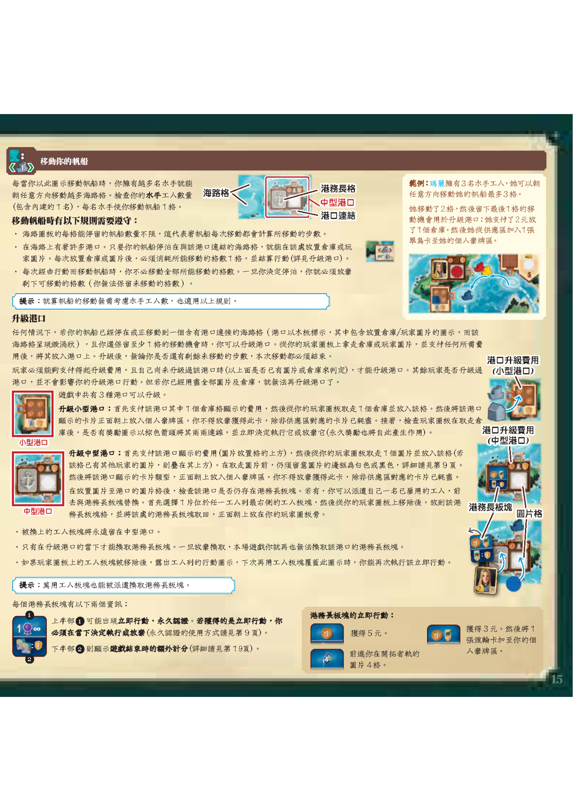
移動你的帆船
（標題左側圖示：帶有數字「1」的行動圖標）
每當你以此圖示移動帆船時，你擁有越多名水手就能朝任意方向移動越多海路格。檢查你的水手工人數量（包含內建的 1 名），每名水手使你移動帆船 1 格。
版圖圖示標註（箭頭指向帆船停靠處的插圖）：
- 海路格
- 港務長格
- 中型港口
- 港口連結
範例：瑪麗擁有 3 名水手工人，她可以朝任意方向移動她的帆船最多 3 格。
她移動了 2 格，然後留下最後 1 格的移動機會用於升級港口：她支付了 2 元放了 1 個倉庫。然後她從供應區加入 1 張翠鳥卡至她的個人棄牌區。
移動帆船時有以下規則需要遵守：
- 海路圖板的每格能停留的帆船數量不限，這代表著帆船每次移動都會計算所移動的步數。
- 在海路上有著許多港口。只要你的帆船停泊在與該港口連結的海路格，就能在該處放置倉庫或玩家圓片。每次放置倉庫或圓片後，必須消耗所能移動的格數 1 格，並結算行動（詳見升級港口）。
- 每次經由行動而移動帆船時，你不必移動全部所能移動的格數。一旦你決定停泊，你就必須放棄剩下可移動的格數（你無法保留未移動的格數）。
提示：就算帆船的移動無需考慮水手工人數，也適用以上規則。
升級港口
任何情況下，若你的帆船已經停在或正移動到一個含有港口連接的海路格（港口以木板標示，其中包含放置倉庫/玩家圓片的圖示，而該海路格呈現漩渦狀），且你還保留至少 1 格的移動機會時，你可以升級港口。從你的玩家圖板上拿走倉庫或玩家圓片，並支付任何所需費用後，將其放入港口上。升級後，無論你是否還有剩餘未移動的步數，本次移動都必須結束。
玩家必須能夠支付得起升級費用，且自己尚未升級過該港口時(以上面是否已有圓片或倉庫來判定)，才能升級港口。其餘玩家是否升級過港口，並不會影響你的升級港口行動。但若你已經用盡全部圓片及倉庫，就無法再升級港口了。
遊戲中共有 3 種港口可以升級。
版圖圖示標註：
- 小型港口（紅框圖：棕色小型港口板塊，上有倉庫格與費用標示）
- 港口升級費用（小型港口）（箭頭指向小型港口板塊上方）
- 中型港口（紅框圖：中型港口板塊，左為船錨圖案的港務長格，右為空圓片格）
- 港口升級費用（中型港口）
- 港務長板塊
- 圓片格
升級小型港口：首先支付該港口其中 1 個倉庫格顯示的費用，然後從你的玩家圖板取走 1 個倉庫並放入該格。然後將該港口顯示的卡片正面朝上放入個人棄牌區。你不得放棄獲得此卡，除非供應區對應的卡片已耗盡。接著，檢查玩家圖板在取走倉庫後，是否有獎勵圖示以棕色箭頭將其兩兩連線，並立即決定執行它或放棄它 (永久獎勵也將自此產生作用)。
升級中型港口：首先支付該港口顯示的費用 (圓片放置格的上方)，然後從你的玩家圖板取走 1 個圓片並放入該格 (若該格已有其他玩家的圓片，則疊在其上方)。在取走圓片前，仍須留意圓片的邊框為白色或黑色，詳細請見第 9 頁。然後將該港口顯示的卡片類型，正面朝上放入個人棄牌區。你不得放棄獲得此卡，除非供應區對應的卡片已耗盡。 在放置圓片至港口的圓片格後，檢查該港口是否仍存在港務長板塊。若有，你可以派遣自己一名已雇用的工人，前去與港務長板塊替換。首先選擇 1 片位於任一工人列最右側的工人板塊，然後從你的玩家圖板上移除後，放到該港務長板塊格，並將該處的港務長板塊取回，正面朝上放在你的玩家圖板旁。
- 被換上的工人板塊將永遠留在中型港口。
- 只有在升級港口的當下才能換取港務長板塊。一旦放棄換取，本場遊戲你就再也無法換取該港口的港務長板塊。
- 如果玩家圖板上的工人板塊被移除後，露出工人列的行動圖示，下次再用工人板塊覆蓋此圖示時，你能再次執行該立即行動。
提示：萬用工人板塊也能被派遣換取港務長板塊。
每個港務長板塊有以下兩個資訊：
（插圖：一塊港務長板塊，上半部標記 ❶，顯示「1」、緞帶勳章圖示與「∞」符號；下半部標記 ❷，顯示卡片圖示與盾牌圖示）
上半部 ❶ 可能出現立即行動、永久認證。若獲得的是立即行動，你必須在當下決定執行或放棄 (永久認證的使用方式請見第 9 頁)。 下半部 ❷ 則顯示遊戲結束時的額外計分 (詳細請見第 19 頁)。
港務長板塊的立即行動：
（圖示：5 元硬幣）獲得 5 元。
（圖示：翠鳥）前進你在開拓者軌的圓片 4 格。
（圖示：3 元硬幣與渡輪）獲得 3 元。然後將 1 張渡輪卡加至你的個人棄牌區。
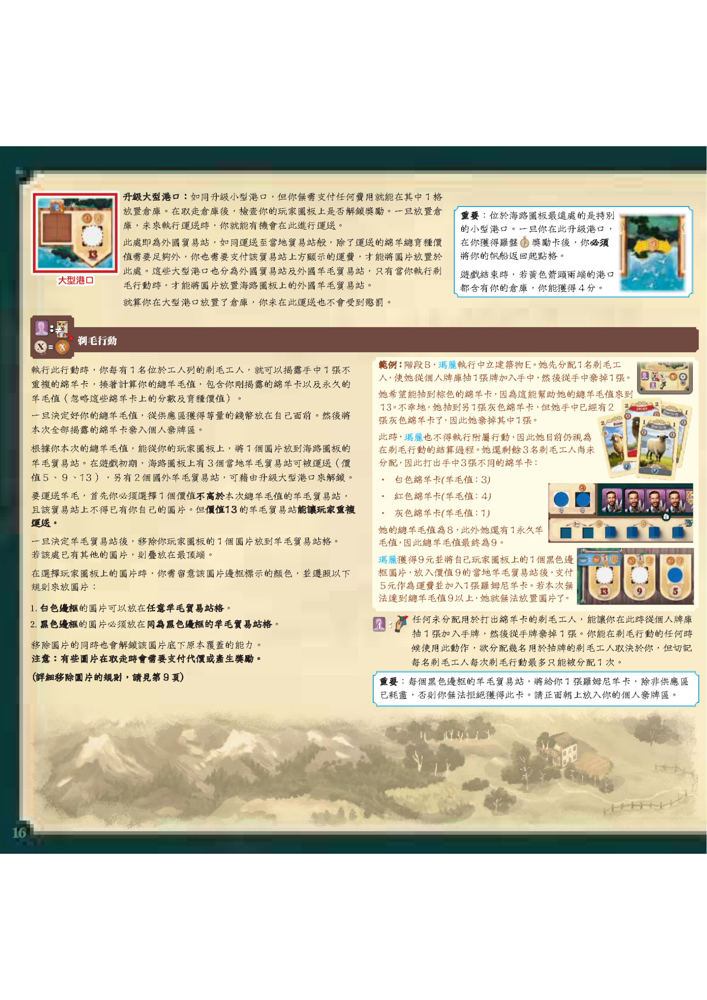
〔左上紅框圖片為大型港口圖版照片，下方紅字說明：〕 大型港口
〔頂段承接前頁，段首為粗體：〕
升級大型港口：如同升級小型港口，但你無需支付任何費用就能在其中 1 格放置倉庫。在取走倉庫後，檢查你的玩家圖板上是否解鎖獎勵。一旦放置倉庫，未來執行運送時，你就能有機會在此進行運送。此處即為外國貿易站，如同運送至當地貿易站般，除了運送的綿羊總育種價值需要足夠外，你也需要支付該貿易站上方顯示的運費，才能將圓片放置於此處。這些大型港口也分為外國貿易站及外國羊毛貿易站，只有當你執行剃毛行動時，才能將圓片放置海路圖板上的外國羊毛貿易站。
就算你在大型港口放置了倉庫，你未在此運送也不會受到懲罰。
〔右上藍框提示，附帆船碼頭照片：〕
重要：位於海路圖板最遠處的是特別的小型港口。一旦你在此升級港口，在你獲得羅盤〔羅盤圖示〕獎勵卡後，你必須將你的帆船返回起點格。
遊戲結束時，若黃色箭頭兩端的港口都含有你的倉庫，你能獲得 4 分。
剃毛行動
〔標題左側圖示：工人列圖示與「X＝X」剃毛工人圖示〕
執行此行動時，你每有 1 名位於工人列的剃毛工人，就可以揭露手中 1 張不重複的綿羊卡，接著計算你的總羊毛值，包含你剛揭露的綿羊卡以及永久的羊毛值（忽略這些綿羊卡上的分數及育種價值）。
一旦決定好你的總羊毛值，從供應區獲得等量的錢幣放在自己面前。然後將本次全部揭露的綿羊卡棄入個人棄牌區。
根據你本次的總羊毛值，能從你的玩家圖板上，將 1 個圓片放到海路圖板的羊毛貿易站。在遊戲初期，海路圖板上有 3 個當地羊毛貿易站可被運送（價值 5、9、13），另有 2 個國外羊毛貿易站，可藉由升級大型港口來解鎖。
要運送羊毛，首先你必須選擇 1 個價值不高於本次總羊毛值的羊毛貿易站，且該貿易站上不得已有你自己的圓片。但價值 13 的羊毛貿易站能讓玩家重複運送。
一旦決定羊毛貿易站後，移除你玩家圖板的 1 個圓片放到羊毛貿易站格。若該處已有其他的圓片，則疊放在最頂端。
在選擇玩家圖板上的圓片時，你需留意該圓片邊框標示的顏色，並遵照以下規則來放圓片：
- 白色邊框的圓片可以放在任意羊毛貿易站格。
- 黑色邊框的圓片必須放在同為黑色邊框的羊毛貿易站格。
移除圓片的同時也會解鎖該圓片底下原本覆蓋的能力。
注意：有些圓片在取走時會需要支付代價或產生獎勵。
（詳細移除圓片的規則，請見第 9 頁）
〔右欄範例框，框內右側嵌有玩家圖板、綿羊卡及羊毛貿易站照片；貿易站照片中三個格子分別標示 13、9、5，前兩格放白色圓片、第三格放藍色圓片：〕
範例：階段B，瑪麗執行中立建築物E。她先分配1名剃毛工人，使她從個人牌庫抽1張牌加入手中，然後從手中棄掉1張。她希望能抽到棕色的綿羊卡，因為這能幫助她的總羊毛值來到13。不幸地，她抽到另1張灰色綿羊卡，但她手中已經有2張灰色綿羊卡了，因此她棄掉其中1張。
此時，瑪麗也不得執行附屬行動，因此她目前仍視為在剃毛行動的結算過程。她還剩餘3名剃毛工人尚未分配，因此打出手中3張不同的綿羊卡：
- 白色綿羊卡(羊毛值：3)
- 紅色綿羊卡(羊毛值：4)
- 灰色綿羊卡(羊毛值：1)
她的總羊毛值為8，此外她還有1永久羊毛值，因此總羊毛值最終為9。
瑪麗獲得9元並將自己玩家圖板上的1個黑色邊框圓片，放入價值9的當地羊毛貿易站後，支付5元作為運費並加入1張羅姆尼羊卡。若本次無法達到總羊毛值9以上，她就無法放置圓片了。
〔剃毛工人圖示「1」與抽牌手勢圖示：〕
任何未分配用於打出綿羊卡的剃毛工人，能讓你在此時從個人牌庫抽 1 張加入手牌，然後從手牌棄掉 1 張。你能在剃毛行動的任何時候使用此動作，欲分配幾名用於抽牌的剃毛工人取決於你，但切記每名剃毛工人每次剃毛行動最多只能被分配 1 次。
〔底部藍框提示：〕
重要：每個黑色邊框的羊毛貿易站，將給你 1 張羅姆尼羊卡，除非供應區已耗盡，否則你無法拒絕獲得此卡。請正面朝上放入你的個人棄牌區。
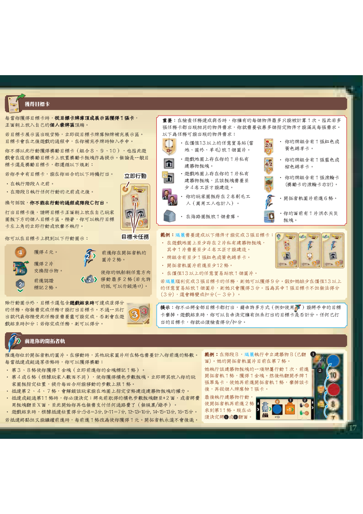
獲得目標卡
每當你獲得目標卡時，從目標卡牌庫頂或展示區獲得1張卡，正面朝上放入自己的個人棄牌區頂端。
若目標卡展示區出現空格，立即從目標卡牌庫抽牌補充展示區。目標卡會在之後遊戲的過程中，在你補充手牌時抽入手中。
你不得以此行動獲得獎勵目標卡（組合8、9、10），也因此遊戲會在這些獎勵目標卡上放置獎勵卡板塊作為提示。無論是一般目標卡還是獎勵目標卡，都遵循以下規則：
若你手中有目標卡，能在你回合的以下時機打出。
- 在執行階段A之前。
- 在階段B執行任何行動的之前或之後。
換句話說，你不能在行動的過程或階段C打出。
打出目標卡後，請將目標卡正面朝上放在自己玩家圖板下方的個人目標卡區。接著，你可以執行目標卡左上角的立即行動或放棄不執行。
（右側配圖：目標卡照片，圖上標註「立即行動」（指向卡片左上角）與「目標卡任務」（指向卡片下方圖示）。）
你可以在目標卡上找到以下行動圖示：
- 〔圖示：4元錢幣〕獲得4元。
- 〔圖示：2片交換〕獲得2片交換指示物。
- 〔圖示：2〕前進認證標記2格。
- 〔圖示：翠鳥2〕前進你在開拓者軌的圓片2格。
- 〔圖示：帆船2〕使你的帆船朝任意方向移動最多2格(若允許的話，可以升級港口)。
除行動圖示外，目標卡還包含遊戲結束時可達成並得分的任務。你無需完成任務才能打出目標卡。不過一旦打出就代表你接受此任務並需要盡可能完成，否則會在遊戲結束時扣分；若你完成任務，則可以得分。
（右側配圖：一張目標卡照片，顯示「3」分盾牌與「-3」分盾牌圖樣。）
重要：在檢查任務達成與否時，你擁有的每個物件最多只能被計算1次。因此若多張任務卡都出現相同的物件需求，你就需要收集多個指定物件才能滿足每張需求。以下為任務可能出現的物件需求：
- 在價值13以上的任意貿易站(當地、國外、羊毛)放1個圖片。
- 遊戲地圖上存在你的1片私有建築物板塊。
- 遊戲地圖上存在你的1片私有建築物板塊，且該板塊需要至少4名工匠才能建造。
- 你的玩家圖板存在2名剃毛工人（萬用工人也計入）。
- 在海路圖板放1個倉庫。
- 你的牌組含有1張紅色或黃色綿羊卡。
- 你的牌組含有1張藍色或棕色綿羊卡。
- 你的牌組含有1張渡輪卡(獎勵卡的渡輪卡亦計)。
- 開拓者軌圓片前進6格。
- 你的面前有1片洪水天災板塊。
（上列各條左側配有對應圖示：13+貿易站盾牌、建築物板塊、4+建築物板塊、2名剃毛工人照片、倉庫、2/3綿羊卡、4/2綿羊卡、渡輪卡、翠鳥6、洪水天災板塊。）
範例：瑪麗需要達成以下條件才能完成3張目標卡：
- 在遊戲地圖上至少存在2片私有建築物板塊，其中1片需要至少4名工匠才能建造。
- 牌組含有至少1張紅色或黃色綿羊卡。
- 開拓者軌圓片前進至少12格。
- 在價值13以上的任意貿易站放1個圓片。
若瑪麗順利完成3張目標卡的任務，則她可以獲得9分。假如她缺少在價值13以上的任意貿易站放1個圓片，則她只會獲得3分。因為其中1張目標卡不但無法得分，還會轉變成扣分（－3分）。
（範例框右側配圖：3張目標卡照片，圖上無可辨識規則文字。）
提示：你不必將全部目標卡都打出，藉由許多方式（例如使用〔圖示：手持卡片〕）能將手中的目標卡棄掉。遊戲結束時，你可以自由決定擁有但未打出的目標卡是否計分。任何已打出的目標卡，你就必須檢查得分/扣分。
前進你的開拓者軌
推進你位於開拓者軌的圓片。在移動時，其他玩家圓片所在格也需要計入你前進的格數。每當抵達或超過某些格時，你可以獲得獎勵：
- 第3、8格使你獲得1金塊（立即前進你的金塊標記1格）。
- 第4或6格（根據玩家人數而不同），使你獲得橘色步數板塊。立即將其放入你的玩家圖板指定位置，提升每回合所能移動的步數上限1格。
- 抵達第2、4、7格，會解鎖該玩家能在地圖上指定空格建造建築物板塊的權力。
- 抵達或超過第11格時，你必須決定：將先前取得的橘色步數板塊翻至+2面，或者將費用板塊翻至X面，至此開始你再也無需支付任何過路費了（無視黑/綠手）。
- 遊戲結束時，根據抵達位置得分:5~8=3分, 9~11=7分, 12~13=10分, 14~15=13分, 16=15分。
若抵達終點但又能繼續前進時，每前進1格改為使你獲得1元。開拓者軌永遠不會後退。
範例：在階段B，瑪麗執行中立建築物B(已翻面)。她的開拓者軌圓片目前在第7格。
她執行該建築物板塊的一項附屬行動1次，前進開拓者軌1格，獲得1金塊。然後他翻開手牌1張翠鳥卡，使她再前進開拓者軌1格，棄掉該卡後，再從個人牌庫抽1張卡。
最後執行建築物行動，使開拓者軌再前進2格來到第11格。現在必須決定將①或②翻面。
（範例框右側配圖：中立建築物行動列照片，標註①「+1」橘色板塊與②另一組翻面圖示；最右為開拓者軌局部照片，以藍色箭頭標示圓片前進路線，圖上無其他可辨識規則文字。）
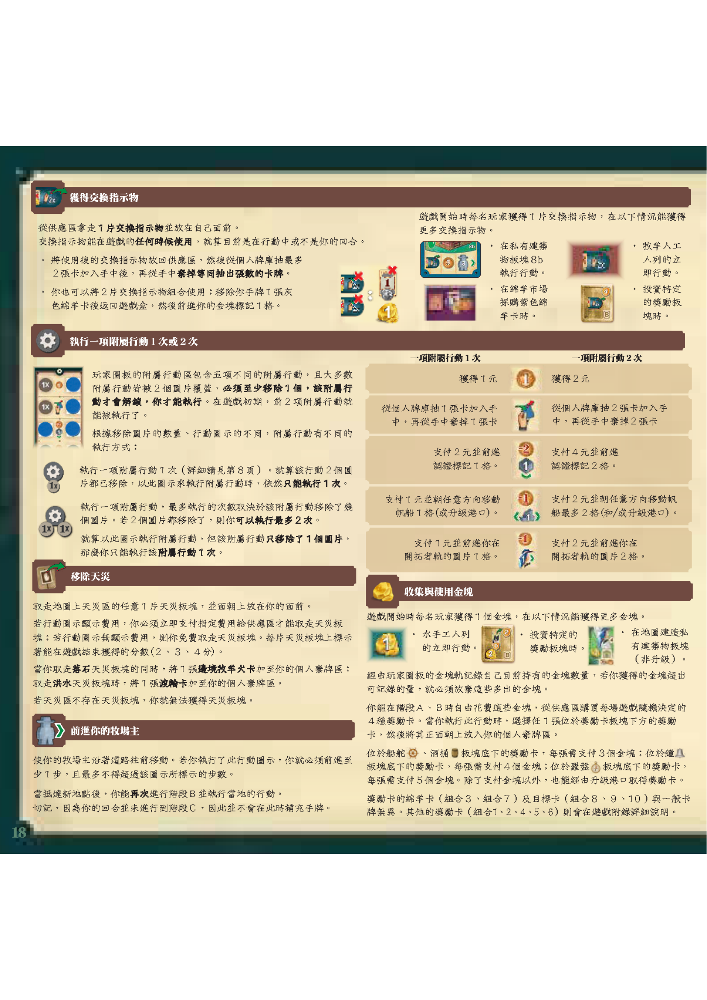
獲得交換指示物
從供應區拿走 1 片交換指示物 並放在自己面前。
交換指示物能在遊戲的任何時候使用，就算目前是在行動中或不是你的回合。
- 將使用後的交換指示物放回供應區，然後從個人牌庫抽最多 2 張卡加入手中後，再從手中棄掉等同抽出張數的卡牌。
- 你也可以將 2 片交換指示物組合使用：移除你手牌 1 張灰色綿羊卡後返回遊戲盒，然後前進你的金塊標記 1 格。
〔右側配圖：兩張被紅叉標記的卡牌、「1」圓片與金塊（金塊上可辨「1」字样）。〕
執行一項附屬行動 1 次或 2 次
玩家圖板的附屬行動區包含五項不同的附屬行動，且大多數附屬行動皆被 2 個圓片覆蓋，必須至少移除 1 個，該附屬行動才會解鎖，你才能執行。在遊戲初期，前 2 項附屬行動就能被執行了。
根據移除圓片的數量、行動圖示的不同，附屬行動有不同的執行方式：
〔配圖：齒輪圖示與 1 個「1x」圓片〕
執行一項附屬行動 1 次（詳細請見第 8 頁）。就算該行動 2 個圓片都已移除，以此圖示來執行附屬行動時，依然只能執行 1 次。
〔配圖：齒輪圖示與 2 個「1x」圓片〕
執行一項附屬行動，最多執行的次數取決於該附屬行動移除了幾個圓片。若 2 個圓片都移除了，則你可以執行最多 2 次。
就算以此圖示執行附屬行動，但該附屬行動只移除了 1 個圓片，那麼你只能執行該附屬行動 1 次。
〔左側配圖：玩家圖板附屬行動區照片，圓片上可辨「1x」字样。〕
移除天災
取走地圖上天災區的任意 1 片天災板塊，並面朝上放在你的面前。
若行動圖示顯示費用，你必須立即支付指定費用給供應區才能取走天災板塊；若行動圖示無顯示費用，則你免費取走天災板塊。每片天災板塊上標示著能在遊戲結束獲得的分數(2、3、4 分)。
當你取走落石天災板塊的同時，將 1 張邊境牧羊犬卡加至你的個人棄牌區；取走洪水天災板塊時，將 1 張渡輪卡加至你的個人棄牌區。
若天災區不存在天災板塊，你就無法獲得天災板塊。
前進你的牧場主
使你的牧場主沿著道路往前移動。若你執行了此行動圖示，你就必須前進至少 1 步，且最多不得超過該圖示所標示的步數。
當抵達新地點後，你能再次進行階段 B 並執行當地的行動。
切記，因為你的回合並未進行到階段 C，因此並不會在此時補充手牌。
〔注：本页顶部与中部各有一条无文字的棕色横条，分別為「獲得交換指示物」与「執行一項附屬行動 1 次或 2 次」两个标题栏向右栏的横向延伸（横贯整页宽）。〕
遊戲開始時每名玩家獲得 1 片交換指示物，在以下情況能獲得更多交換指示物。
- 在私有建築物板塊 8b 執行行動。
- 在綿羊市場採購紫色綿羊卡時。
- 牧羊工人列的立即行動。
- 投資特定的獎勵板塊時。
〔配圖：私有建築物板塊「8b」照片（可辨「8b」「5」「3」字样）、紫色卡牌照片、板塊照片（可辨「1x」）、獎勵板塊照片（可辨「4」「B」字样）。〕
| 一項附屬行動 1 次 | 圖示 | 一項附屬行動 2 次 | | --- | --- | --- | | 獲得 1 元 | 【圖示：1 元硬幣】 | 獲得 2 元 | | 從個人牌庫抽 1 張卡加入手中，再從手中棄掉 1 張卡 | 【圖示】 | 從個人牌庫抽 2 張卡加入手中，再從手中棄掉 2 張卡 | | 支付 2 元並前進認證標記 1 格。 | 【圖示：-2、1】 | 支付 4 元並前進認證標記 2 格。 | | 支付 1 元並朝任意方向移動帆船 1 格(或升級港口)。 | 【圖示：-1、1】 | 支付 2 元並朝任意方向移動帆船最多 2 格(和/或升級港口)。 | | 支付 1 元並前進你在開拓者軌的圓片 1 格。 | 【圖示：-1、1】 | 支付 2 元並前進你在開拓者軌的圓片 2 格。 |
收集與使用金塊
遊戲開始時每名玩家獲得 1 個金塊，在以下情況能獲得更多金塊。
- 水手工人列的立即行動。
- 投資特定的獎勵板塊時。
- 在地圖建造私有建築物板塊（非升級）。
〔配圖：金塊（可辨「1」字样）、獎勵板塊（可辨「2」「0」「B」字样）、建築板塊照片。〕
經由玩家圖板的金塊軌記錄自己目前持有的金塊數量，若你獲得的金塊超出可記錄的量，就必須放棄這些多出的金塊。
你能在階段 A、B 時自由花費這些金塊，從供應區購買每場遊戲隨機決定的 4 種獎勵卡。當你執行此行動時，選擇任 1 張位於獎勵卡板塊下方的獎勵卡，然後將其正面朝上放入你的個人棄牌區。
位於船舵【圖示】、酒桶【圖示】板塊底下的獎勵卡，每張需支付 3 個金塊；位於鐘【圖示】板塊底下的獎勵卡，每張需支付 4 個金塊；位於羅盤【圖示】板塊底下的獎勵卡，每張需支付 5 個金塊。除了支付金塊以外，也能經由升級港口取得獎勵卡。
獎勵卡的綿羊卡（組合 3、組合 7）及目標卡（組合 8、9、10）與一般卡牌無異。其他的獎勵卡（組合 1、2、4、5、6）則會在遊戲附錄詳細說明。
遊戲結束
當一名玩家在威靈頓的步驟④，將獎勵板塊放入獎勵市場的最後1格，使得獎勵市場標記移出圖板時，便觸發了遊戲結束。這名玩家立即將獎勵市場標記取走放在自己面前（價值5分）。在這名玩家回合結束時，如往常補滿預測區後，這名玩家在本場遊戲的最後一回合也隨之結束。
重要：在全部玩家的最後一回合，不會執行階段C。也就是當玩家執行階段B後，不會將手牌補到上限。
全部其他玩家還有最後一回合的行動機會，他們如往常移動自己的牧場主並執行抵達地點的行動。在最後一回合抵達威靈頓的玩家，也能如往常結算威靈頓四步驟，但若在步驟④的預測區B時，選擇獎勵板塊的話，請將獎勵板塊移除遊戲。在回合結束時，依然需要再次填滿預測區。當最後一名玩家也完成最後一回合後，遊戲結束，並進行最終計分。
最終計分
拿出計分紙並依照以下12個項目為每名玩家進行計分：
- 〔圖示：5：1〕每剩下5元獲得1分。
- 加總你存在遊戲地圖上的私有建築物板塊右上角顯示的分數。〔圖示：板塊顯示1、3、9〕
- 加總全部包含你玩家圓片的貿易站(包含當地貿易站、外國貿易站、羊毛貿易站)的得分。其中可能包含負分，因此本項加總可能是負數。詳細請見第10頁。〔圖示：貿易站顯示13、5〕
- 加總海路圖板全部包含你倉庫、玩家圓片的中、小型港口的得分。詳見第15頁。
- 獲得等同你開拓者軌圖片所在格的分數。(分數會顯示在你的圓片旁或下方，你獲得已達到的最高分數)。
- 獲得你所收集到的天然板塊、獎勵板塊上的分數。
- 從你的牧羊牌庫(包含手牌、個人牌庫、棄牌區)中找出全部含有分數的獎勵卡及綿羊卡並加總(目標卡除外)。
- 找出你牧羊牌庫全部的目標卡(包含獎勵目標卡)，並為每張目標卡決定是否移除或加入你的個人目標卡區(無法使用其立即行動)。
接著檢查位於個人目標卡區的每張目標卡是否達成任務。
加總每張達成任務的目標卡的分數、扣除每張未達成任務的目標卡的負分數，即為本項目的總得分(總得分可能為負)。
目標卡的詳細說明請見第17頁。
- 獲得每片你擁有的港務長板塊所產生的分數。每片港務長板塊的分數都是獨立計算，彼此計算的物件並不像目標卡只能計算一次。每片的計分方式請見底下表格。
- 若移除玩家圖板的這個圓片(手牌上限)，獲得3分。〔圖示：4、3、J、+1〕
- 每個工人列的第5格若有工人板塊，獲得4分。
若你成功移除玩家圖板底下的倉庫，且這些倉庫存放格中間標有分數，可分別獲得2分、4分。
- 若你擁有獎勵市場標記，獲得5分。
在計算全部項目後，總分最高的玩家贏得遊戲！ 若平手，則這些玩家共享遊戲勝利。
港務長板塊計分說明：
| 〔圖示：認證：1〕你擁有的每個認證(無論臨時或永久)獲得1分。 | 〔圖示：倉庫：1〕你在海路圖板每放了2個倉庫，獲得1分。 | | --- | --- | | 〔圖示：目標卡：1〕你個人目標卡區的每張目標卡(無論是否達成任務)獲得1分。 | 〔圖示：建築物：1〕你在遊戲圖板上每存在1片你的私有建築物板塊獲得1分。 | | 〔圖示：天然板塊：1〕你收集的每片天然板塊(無論類型)獲得1分。 | 〔圖示：渡輪卡：1〕你牧羊牌庫中的每張渡輪卡獲得1分(包含組合1的獎勵卡)。 | | 〔圖示：5：2〕你的開拓者軌每前進了5格，獲得2分。 | 〔圖示：工人：1〕你的工人列每有2名工人獲得1分(包含玩家圖板內建的工人)。 |
常見問題及特殊狀況說明
- 錢幣與交換指示物為無限供應，如果不幸用盡，請尋找任何替代品。
- 目標卡牌庫是有可能耗盡的。當耗盡時，展示區將不再補充；若展示區的目標卡也被取光，則玩家無法再獲得更多目標卡。
- 你可以隨時查看自己的棄牌區有哪些牌，但不能查看個人牌庫。
- 你可以經由附屬行動來永久移除卡牌，以提升抽到高價值卡牌的機會。本遊戲並無限制你能壓縮牌庫至何種程度，但如果你的牌庫不足使你在回合結束時，補充到指定數量的手牌，你就只能以缺少手牌的情況繼續遊戲(不建議這麼做)。
- 如果你必須在貿易站或港口格放置圓片，但該格為白色邊框，且你的玩家圖板只剩黑色邊框的圓片時，你可以破例放入黑色邊框圓片。
- 如果你因為玩家圖板上沒有任何圓片或取走圓片需要支付費用，但你錢幣不足時，你改為從任一中型港口拿取 1 個自己圓片放入指定位置(若中型港口也無圓片，你無法放置圓片)。
- 若你要替換的建築物板塊目前停留自己的牧場主，只要你未執行任何被替換建築物板塊的任何行動，你就能執行新換上建築物板塊的行動。
- 如果你要取走的天災板塊上有牧場主停留，請將該牧場主維持原地即可，他下次移動時也將比照原本的移動規則。
- 當你需要計算羊毛值或育種價值，而向其他玩家揭露手牌的時候，這是本遊戲唯一無法使用交換指示物的時刻，也無法使用效果為抽牌的牌。(將會在威靈頓步驟 ❶ 以及「剃毛行動」計算羊毛時發生)。
- 打出牌組建構卡或獎勵卡(非綿羊或目標卡)，在執行或放棄其行動後，抽 1 張牌〔圖示：手持卡牌〕。
※ 上條「❶」為原書紅色圓圈數字「1」圖示。
製作團隊
我們由衷感謝全部參加遊戲測試的玩家，尤其是： Fernando Moritz、Joakim Glimsjö、Mario Rossi、Max Posti、Ryan Hendrickson。
特別要感謝Pike Stahlmann-Brown、Graeme Edgeler和Timon Bakker 對於紐西蘭開拓史的大力幫助和回饋。
特別感謝 Garth Automa 團隊的 Steve Schlepphorst、Wil Gerken 的 David Lavoie 為這款遊戲的變體玩法做出的貢獻。
感謝 Brian Petro 的修訂。
| 遊戲設計師 | 插圖繪製 | 中文版編輯 | | --- | --- | --- | | Alexander Pfister | Chris Quilliams | Eddie Liu | | 產品製作人 | 視覺設計 | 中文版翻譯 | | Sophie Gravel | Emeline D'Aoust | Eddie Liu | | 開發 | 3D 建模 | 中文版校對 | | André Bierth、Anh Tú Tran | Emeline D'Aoust | Xavier Hu | | 美術指導 | 英文版編輯 | 中文版美術設計 | | Sophie Gravel、Martin Bouchard | André Bierth | Weiwei Lai |
遊戲開發商
〔Eggertspiele 商標圖樣〕
www.planbgames.com info@planbgames.com
© 2023 Plan B Games Europe GmbH Am Römerkastell 10 70376 STUTTGART GERMANY
EGGERTSPIELE 是 Plan B Games Europe GmbH 旗下品牌。 未經允許不得擅自製作本遊戲的任何配件。 Retain this information for your records. Made in China.
繁體中文版代理商
〔YA!YAYOI 商標圖樣；圖內小字：彌生的桌遊日記〕
FB:YAYOI.The.Dreamer yayoithedreamer@gmail.com
遊戲教學頻道
〔QR code 圖樣〕
附錄:行動詳解(獨立頁碼;原帖缺頁2~3)
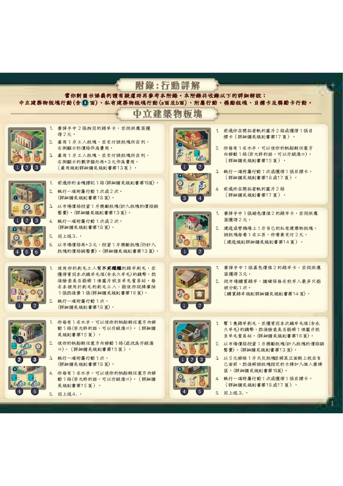
附錄：行動詳解
當你對圖示涵義判讀有疑慮時再參考本附錄。本附錄共收錄以下的詳細解說： 中立建築物板塊行動(含 11 面)、私有建築物板塊行動(a面及b面)、附屬行動、獎勵板塊、目標卡及獎勵卡行動。
標題「(含 11 面)」中的「11」為一藍色圓形圖示，內繪建築物板塊背並標數字 11。
中立建築物板塊
板塊A
- 棄掉手中2張相同的綿羊卡，並從供應區獲得2元。
- 雇用1片工人板塊，並支付該板塊所在列，右側顯示的價格作為費用。
- 雇用1片工人板塊，並支付該板塊所在列，右側顯示的數字額外再+3元作為費用。（雇用規則詳細請見規則書第13頁）。
板塊圖樣角標字母 A；圖示小字：2、0、-3。
板塊C
- 前進你的金塊標記1格(詳細請見規則書第18頁)。
- 執行一項附屬行動1次或2次。(詳細請見規則書第18頁)。
- 以市場價格投資1片獎勵板塊(計入板塊的價格調整費)。(詳細請見規則書第13頁)。
- 執行一項附屬行動1次或2次。(詳細請見規則書第18頁)。
- 同上述3.。
- 以市場價格再+3元，投資1片獎勵板塊(仍計入板塊的價格調整費)。(詳細請見規則書第13頁)。
板塊兩面：1面圖示小字：1、1x、1x、B、-0；11面圖示小字：1x、1x、B、-0、B、-3。板塊圖樣角標字母 C。
板塊E
- 使用你的剃毛工人幫不同種類的綿羊剃毛，並獲得等同本次總羊毛值(含永久羊毛)的錢幣。然後檢查是否能將1個圓片放至羊毛貿易站。每名未被用於剃毛的剃毛工人，能使你從牌庫抽1張然後棄1張(詳細請見規則書第16頁)。
- 執行一項附屬行動1次。(詳細請見規則書第18頁)。
板塊圖樣角標字母 E；圖示為剃毛工人、綿羊卡與「X＝X」符號、齒輪 1x 等小圖。
板塊G
- 你每有1名水手，可以使你的帆船朝任意方向移動1格(若允許的話，可以升級港口)。（詳細請見規則書第15頁）。
- 使你的帆船朝任意方向移動1格(或改為升級港口)。（詳細請見規則書第15頁）。
- 執行一項附屬行動1次。(詳細請見規則書第18頁)。
- 你每有1名水手，可以使你的帆船朝任意方向移動1格(若允許的話，可以升級港口)。（詳細請見規則書第15頁）。
- 同上述4.。
板塊兩面：1面圖示小字：1、1、齒輪 1x；11面圖示小字：1、1。板塊圖樣角標字母 G。
板塊B
- 前進你在開拓者軌的圓片2格或獲得1張目標卡（詳細請見規則書第17頁）。
- 你每有1名水手，可以使你的帆船朝任意方向移動1格(若允許的話，可以升級港口)。（詳細請見規則書第15頁）。
- 執行一項附屬行動1次或獲得1張目標卡。（詳細請見規則書第18或17頁）。
- 前進你在開拓者軌的圓片2格（詳細請見規則書第17頁）。
板塊兩面：1面圖示小字：翠鳥2、1；11面圖示小字：1x、翠鳥2。板塊圖樣角標字母 B。
板塊D
- 棄掉手中1張綠色價值2的綿羊卡，並從供應區獲得2元。
- 建造或替換場上1片自己的私有建築物板塊。該板塊每需1名工匠，你需要支付2元。（建造規則詳細請見規則書第14頁）。
板塊圖樣角標字母 D；圖示小字：2、2、-2。
板塊F
- 棄掉手中1張黑色價值2的綿羊卡，並從供應區獲得3元。
- 從市場購買綿羊，請確保每名牧羊人最多只能被分配1次。（購買綿羊規則詳細請見規則書第14頁）。
板塊圖樣角標字母 F；圖示小字：2、3，右側為綿羊頭圖像。
板塊H
- 幫1隻綿羊剃毛，並獲等同本次總羊毛值(含永久羊毛)的錢幣。然後檢查是否能將1個圓片放至羊毛貿易站。(詳細請見規則書第16頁)。
- 以市場價格投資1片獎勵板塊(計入板塊的價格調整費)。(詳細請見規則書第13頁)。
- 以5元移除1片天災板塊並將其正面朝上放在自己面前。然後將該板塊指定的卡牌加入個人棄牌區。(詳細請見規則書第18頁)。
- 執行一項附屬行動1次或獲得1張目標卡。（詳細請見規則書第18或17頁）。
- 同上述3.。
板塊兩面：1面圖示小字：X、X、B、-0、D、-5；11面圖示小字：1x、1x、D、-5。板塊圖樣角標字母 H。
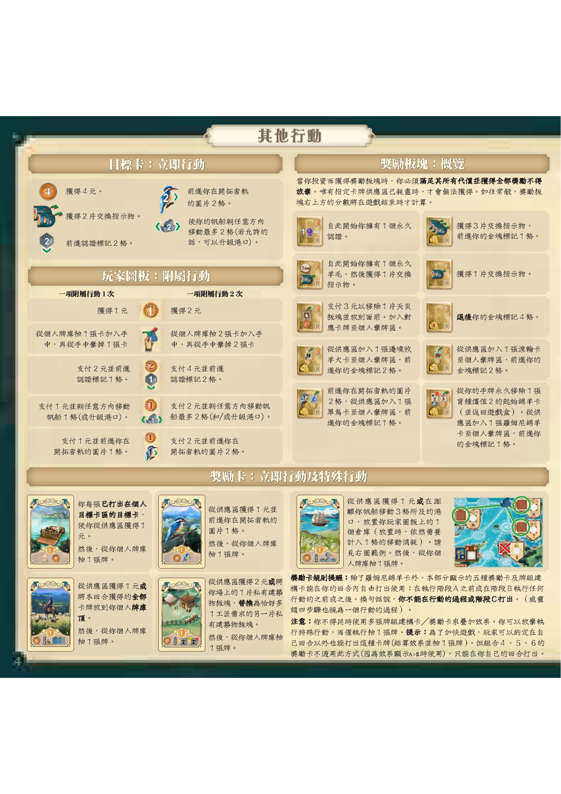
其他行動
目標卡：立即行動
- 〔圖示：錢幣「4」〕獲得 4 元。
- 〔圖示：2 片交換指示物「2x」〕獲得 2 片交換指示物。
- 〔圖示：認證標記「2」〕前進認證標記 2 格。
- 〔圖示：翠鳥「2」〕前進你在開拓者軌的圓片 2 格。
- 〔圖示：帆船「2」〕使你的帆船朝任意方向移動最多 2 格 (若允許的話，可以升級港口)。
玩家圖板：附屬行動
| 一項附屬行動 1 次 | 一項附屬行動 2 次 | | --- | --- | | 獲得 1 元 | 獲得 2 元 | | 從個人牌庫抽 1 張卡加入手中，再從手中棄掉 1 張卡 | 從個人牌庫抽 2 張卡加入手中，再從手中棄掉 2 張卡 | | 支付 2 元並前進認證標記 1 格。 | 支付 4 元並前進認證標記 2 格。 | | 支付 1 元並朝任意方向移動帆船 1 格 (或升級港口)。 | 支付 2 元並朝任意方向移動帆船最多 2 格 (和/或升級港口)。 | | 支付 1 元並前進你在開拓者軌的圓片 1 格。 | 支付 2 元並前進你在開拓者軌的圓片 2 格。 |
獎勵板塊：概覽
當你投資而獲得獎勵板塊時，你必須滿足其所有代價並獲得全部獎勵不得放棄。唯有指定卡牌供應區已耗盡時，才會無法獲得。如往常般，獎勵板塊右上方的分數將在遊戲結束時才計算。
左欄：
- 〔板塊圖示：「1」與紫色緞帶「∞」，右上角「2」，「B」〕自此開始你擁有 1 個永久認證。
- 〔板塊圖示：「1∞」羊毛、「2x」交換指示物，右上角「2」，「B」〕自此開始你擁有 1 個永久羊毛，然後獲得 1 片交換指示物。
- 〔板塊圖示：天災板塊與「-3」錢幣，右上角「2」，「B」〕支付 3 元以移除 1 片天災板塊並放到面前。加入對應卡牌至個人棄牌區。
- 〔板塊圖示：邊境牧羊犬「0」、「2」金塊，右上角「2」，「B」〕從供應區加入 1 張邊境牧羊犬卡至個人棄牌區，前進你的金塊標記 2 格。
- 〔板塊圖示：翠鳥「2」、「0」、「1」金塊，「B」〕前進你在開拓者軌的圓片 2 格，從供應區加入 1 張翠鳥卡至個人棄牌區，前進你的金塊標記 1 格。
右欄：
- 〔板塊圖示：「2x」交換指示物、「1」金塊，「B」〕獲得 3 片交換指示物，前進你的金塊標記 1 格。
- 〔板塊圖示：「2x」交換指示物，右上角「4」，「B」〕獲得 1 片交換指示物。
- 〔板塊圖示：「-4」金塊，右上角「8」，「B」〕退後你的金塊標記 4 格。
- 〔板塊圖示：渡輪卡「0」、「2」金塊，右上角「2」，「B」〕從供應區加入 1 張渡輪卡至個人棄牌區，前進你的金塊標記 2 格。
- 〔板塊圖示：紅色「✕」與起始綿羊卡「2」「3」、「1」金塊，「B」〕從你的手牌永久移除 1 張育種價值 2 的起始綿羊卡（並返回遊戲盒）。從供應區加入 1 張羅姆尼綿羊卡至個人棄牌區，前進你的金塊標記 1 格。
獎勵卡：立即行動及特殊行動
- 〔獎勵卡一〕你每張已打出在個人目標卡區的目標卡，使你從供應區獲得 1 元。
然後，從你個人牌庫抽 1 張牌。
- 〔獎勵卡二〕從供應區獲得 1 元並前進你在開拓者軌的圓片 1 格。
然後，從你個人牌庫抽 1 張牌。
- 〔獎勵卡三〕從供應區獲得 1 元或將本回合獲得的全部卡牌放到你個人牌庫頂。
然後，從你個人牌庫抽 1 張牌。
- 〔獎勵卡四〕從供應區獲得 2 元或將你場上的 1 片私有建築物板塊，替換為恰好多 1 工匠需求的另一片私有建築物板塊。
然後，從你個人牌庫抽 1 張牌。
- 〔獎勵卡五〕從供應區獲得 1 元或在距離你帆船移動 3 格所及的港口，放置你玩家圖板上的 1 個倉庫（放置時，依然需要計入 1 格的移動消耗）。請見右圖範例。然後，從你個人牌庫抽 1 張牌。
〔右圖範例：地圖上的帆船以綠線連至三個以綠圈標示的港口，另有一港口以紅色「✕」標示〕
獎勵卡規則提醒：除了羅姆尼綿羊卡外，本部分顯示的五種獎勵卡及牌組建構卡能在你的回合內自由打出使用：在執行階段A之前或在階段B執行任何行動的之前或之後。換句話說，你不能在行動的過程或階段C打出。（威靈頓四步驟也視為一個行動的過程）。
注意：你不得同時使用多張牌組建構卡／獎勵卡來疊加效果。你可以放棄執行特殊行動，而僅執行抽 1 張牌。提示：為了加快遊戲，玩家可以約定在自己回合以外也能打出這種卡牌 (結算效果並抽 1 張牌)。但組合 4、5、6 的獎勵卡不適用此方式 (因為效果顯示A>B時使用)，只能在你自己的回合打出。
私有建築物板塊總覽(獨立頁碼;原帖缺頁1)
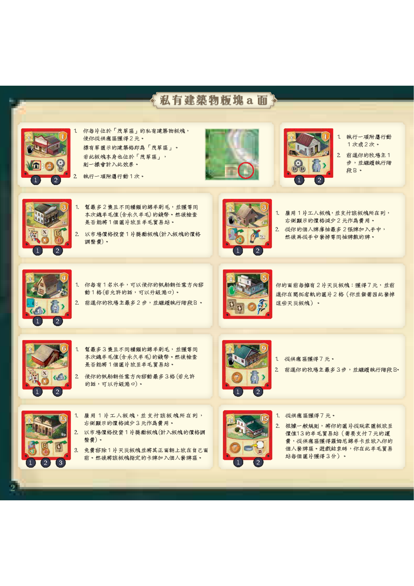
私有建築物板塊 a 面
私有建築物 1a
卡面印字：左上袋「1」、右上盾「1」、圖內小字「1a」；圖示：草與屋、圓幣「2」、齒輪「1x」。卡下圓形序號：1、2。旁附地圖範例圖（紅圈標示一處建築格，無文字）。
- 你每片位於「茂草區」的私有建築物板塊，
使你從供應區獲得 2 元。 擁有草圖示的建築格即為「茂草區」。 若此板塊本身也位於「茂草區」， 則一樣會計入此效果。
- 執行一項附屬行動 1 次。
私有建築物 2a
卡面印字：左上袋「1」、右上盾「1」、圖內小字「2a」；圖示：齒輪「1x」、「1x」、工人「1」。卡下圓形序號：1、2。
- 執行一項附屬行動 1 次或 2 次。
- 前進你的牧場主 1 步，並繼續執行階段B。
私有建築物 3a
卡面印字：左上袋「2」、右上盾「3」、圖內小字「3a」；圖示：卡牌「X」、圓幣「X」、「B」獎勵板塊與圓幣「-0」。卡下圓形序號：1、2。
- 幫最多 2 隻且不同種類的綿羊剃毛，並獲等同
本次總羊毛值(含永久羊毛)的錢幣。然後檢查 是否能將 1 個圓片放至羊毛貿易站。
- 以市場價格投資 1 片獎勵板塊(計入板塊的價格
調整費)。
私有建築物 4a
卡面印字：左上袋「2」、右上盾「3」、圖內小字「4a」；圖示：工人板塊與圓幣「+2」、手牌「2x」。卡下圓形序號：1、2。
- 雇用 1 片工人板塊，並支付該板塊所在列，
右側顯示的價格減少 2 元作為費用。
- 從你的個人牌庫抽最多 2 張牌加入手中，
然後再從手中棄掉等同抽牌數的牌。
私有建築物 5a
卡面印字：左上袋「3」、右上盾「4」、圖內小字「5a」；圖示：工人板塊、工人「1」與左右綠色箭頭、工人「2」。卡下圓形序號：1、2。
- 你每有 1 名水手，可以使你的帆船朝任意方向移
動 1 格(若允許的話，可以升級港口)。
- 前進你的牧場主最多 2 步，並繼續執行階段B。
私有建築物 6a
卡面印字：左上袋「4」、右上盾「5」、圖內小字「6a」；圖示：兩片印有手掌圖案的小板塊、圓幣「7」、翠鳥「2」。卡下無圓形序號。
你的面前每擁有 2 片天災板塊：獲得 7 元，並前 進你在開拓者軌的圓片 2 格 (你並無需因此棄掉 這些天災板塊)。
私有建築物 7a
卡面印字：左上袋「5」、右上盾「6」、圖內小字「7a」；圖示：卡牌「X」、「＊」、圓幣「X」、工人「3」與左右綠色箭頭。卡下圓形序號：1、2。
- 幫最多 3 隻且不同種類的綿羊剃毛，並獲等同
本次總羊毛值(含永久羊毛)的錢幣。然後檢查 是否能將 1 個圓片放至羊毛貿易站。
- 使你的帆船朝任意方向移動最多 3 格 (若允許
的話，可以升級港口)。
私有建築物 8a
卡面印字：左上袋「7」、右上盾「9」、圖內小字「8a」；圖示：圓幣「7」、工人「3」。卡下圓形序號：1、2。
- 從供應區獲得 7 元。
- 前進你的牧場主最多 3 步，並繼續執行階段B。
私有建築物 9a
卡面印字：左上袋「9」、右上盾「13」、圖內小字「9a」；圖示：工人板塊與圓幣「3」、「B」獎勵板塊與圓幣「-0」、另一板塊圖示（過小，〔?〕）。卡下圓形序號：1、2、3。
- 雇用 1 片工人板塊，並支付該板塊所在列，
右側顯示的價格減少 3 元作為費用。
- 以市場價格投資 1 片獎勵板塊(計入板塊的價格調
整費)。
- 免費移除 1 片天災板塊並將其正面朝上放在自己面
前。然後將該板塊指定的卡牌加入個人棄牌區。
私有建築物 10a
卡面印字：左上袋「10」、右上盾「15」、圖內小字「10a」；圖示：圓幣「7」、圓片經黃色箭頭指向「13」羊毛貿易站。卡下圓形序號：1、2。
- 從供應區獲得 7 元。
- 根據一般規則，將你的圓片從玩家圖板放至
價值13 的羊毛貿易站 (需要支付 7 元的運 費，從供應區獲得羅姆尼綿羊卡並放入你的 個人棄牌區。遊戲結束時，你在此羊毛貿易 站每個圓片獲得 3 分)。
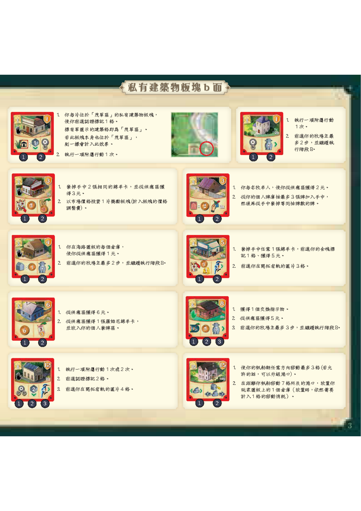
私有建築物板塊 b 面
私有建築物 1b
卡面印字：左上袋「1」、右上盾「1」、圖內小字「1b」；圖示：草與屋、六角「1」、齒輪「1x」。卡下圓形序號：1、2。旁附地圖範例圖（紅圈標示一處建築格，無文字）。
- 你每片位於「茂草區」的私有建築物板塊，
使你前進認證標記 1 格。 擁有草圖示的建築格即為「茂草區」。 若此板塊本身也位於「茂草區」， 則一樣會計入此效果。
- 執行一項附屬行動 1 次。
私有建築物 2b
卡面印字：左上袋「1」、右上盾「1」、圖內小字「2b」；圖示：齒輪「1x」、工人「2」。卡下圓形序號：1、2。
- 執行一項附屬行動 1 次。
- 前進你的牧場主最多 2 步，並繼續執行階段B。
私有建築物 3b
卡面印字：左上袋「2」、右上盾「3」、圖內小字「3b」；圖示：卡牌、圓幣「3」、「B」獎勵板塊與圓幣「-0」。卡下圓形序號：1、2。
- 棄掉手中 2 張相同的綿羊卡，並從供應區獲
得 3 元。
- 以市場價格投資 1 片獎勵板塊(計入板塊的價格
調整費)。
私有建築物 4b
卡面印字：左上袋「2」、右上盾「3」、圖內小字「4b」；圖示：卡牌與圓幣、手牌「3x」。卡下圓形序號：1、2。
- 你每名牧羊人，使你從供應區獲得 2 元。
- 從你的個人牌庫抽最多 3 張牌加入手中，
然後再從手中棄掉等同抽牌數的牌。
私有建築物 5b
卡面印字：左上袋「3」、右上盾「4」、圖內小字「5b」；圖示：倉庫、圓幣「1」、工人「2」。卡下圓形序號：1、2。
- 你在海路圖板的每個倉庫，
使你從供應區獲得 1 元。
- 前進你的牧場主最多 2 步，並繼續執行階段B。
私有建築物 6b
卡面印字：左上袋「4」、右上盾「5」、圖內小字「6b」；圖示：卡牌、圓幣「5」、金塊「1」、翠鳥「3」。卡下圓形序號：1、2。
- 棄掉手中任意 1 張綿羊卡，前進你的金塊標
記 1 格、獲得 5 元。
- 前進你在開拓者軌的圓片 3 格。
私有建築物 7b
卡面印字：左上袋「5」、右上盾「6」、圖內小字「7b」；圖示：圓幣「6」、綿羊卡「3」。卡下圓形序號：1、2。
- 從供應區獲得 6 元。
- 從供應區獲得 1 張羅姆尼綿羊卡，
並放入你的個人棄牌區。
私有建築物 8b
卡面印字：左上袋「6」、右上盾「8」、圖內小字「8b」；圖示：交換指示物「2x」、圓幣「5」、工人「3」。卡下圓形序號：1、2、3。
- 獲得 1 個交換指示物。
- 從供應區獲得 5 元。
- 前進你的牧場主最多 3 步，並繼續執行階段B。
私有建築物 9b
卡面印字：左上袋「8」、右上盾「12」、圖內小字「9b」；圖示：齒輪「1x」、「1x」、六角「2」、翠鳥「4」。卡下圓形序號：1、2、3。
- 執行一項附屬行動 1 次或 2 次。
- 前進認證標記 2 格。
- 前進你在開拓者軌的圓片 4 格。
私有建築物 10b
卡面印字：左上袋「10」、右上盾「15」、圖內小字「10b」；圖示：工人「3」與左右綠色箭頭、倉庫與箭頭「7→」「←7」。卡下圓形序號：1、2。
- 使你的帆船朝任意方向移動最多3格 (若允
許的話，可以升級港口)。
- 在距離你帆船移動 7 格所及的港口，放置你
玩家圖板上的 1 個倉庫 (放置時，依然需要 計入 1 格的移動消耗)。
英雌狠角色:單人模式(獨立頁碼)
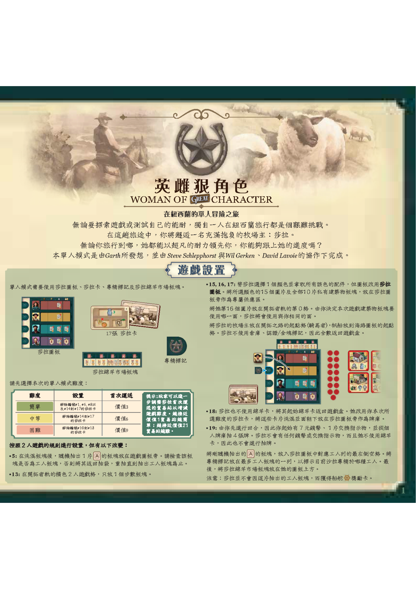
英雌狠角色
WOMAN OF GREAT CHARACTER
在紐西蘭的單人冒險之旅
無論要探索遊戲或測試自己的能耐，獨自一人在紐西蘭旅行都是個艱難挑戰。
在這趟旅途中，你將邂逅一名充滿抱負的牧場主：莎拉。
無論你旅行到哪，她都能以超凡的耐力領先你，你能夠跟上她的進度嗎？
本單人模式是由Garth所發想，並由Steve Schlepphorst與Wil Gerken、David Lavoie的協作下完成。
遊戲設置
單人模式需要使用莎拉圖板、莎拉卡、專精標記及莎拉綿羊市場板塊。
〔圖說〕莎拉圖板 ／ 17張 莎拉卡 ／ 莎拉綿羊市場板塊 ／ 專精標記
請先選擇本次的單人模式難度：
| 難度 | 設置 | 首次運送 | | --- | --- | --- | | 簡單 | 移除編號#1, #6, #8以及#14到#17的莎拉卡 | 價值3 | | 中等 | 移除編號#14到#17的莎拉卡 | 價值6 | | 困難 | 移除編號#10到#13的莎拉卡 | 價值9 |
〔表格右側綠底提示框〕提示:玩家可以進一步調整莎拉首次運送的貿易站以增減遊戲難度。越接近價值1貿易站越簡單；越接近價值21貿易站越難。
按照 2 人遊戲的規則進行設置，但有以下改變：
- 5: 在洗混板塊後，隨機抽出 1 片〔圖示：A〕的板塊放在遊戲圖板旁。請檢查該板塊是否為工人板塊，否則將其返回抽袋，重抽直到抽出工人板塊為止。
- 13: 在開拓者軌的橘色 2 人遊戲格，只放 1 個步數板塊。
- 15, 16, 17: 替莎拉選擇 1 個顏色並拿取所有該色的配件，但圖板改用莎拉圖板。將所選顏色的15個圓片及全部10片私有建築物板塊，放在莎拉圖板旁作為專屬供應區。
將她第16個圓片放在開拓者軌的第 0 格。由你決定本次遊戲建築物板塊要使用哪一面，莎拉將會使用與你相同的面。
將莎拉的牧場主放在開拓之路的起點格（騎馬者），帆船放到海路圖板的起點格。莎拉不使用倉庫、認證/金塊標記，因此全數返回遊戲盒。
- 18: 莎拉也不使用綿羊卡，將其起始綿羊卡返回遊戲盒。她改用你本次所選難度的莎拉卡，將這些卡片洗混並面朝下放在莎拉圖板旁作為牌庫。
- 19: 由你先進行回合，因此你起始有 7 元錢幣、1 片交換指示物，並從個人牌庫抽 4 張牌。莎拉不會有任何錢幣或交換指示物，而且她不使用綿羊卡，因此也不會進行抽牌。
將剛隨機抽出的〔圖示：A〕的板塊，放入莎拉圖板中對應工人列的最左側空格。將專精標記放在最多工人板塊的一列，以標示目前沙拉專精於哪種工人。最後，將莎拉綿羊市場板塊放在她的圖板上方。
注意：莎拉並不會因這片抽出的工人板塊，而獲得船舵〔圖示：船舵〕獎勵卡。
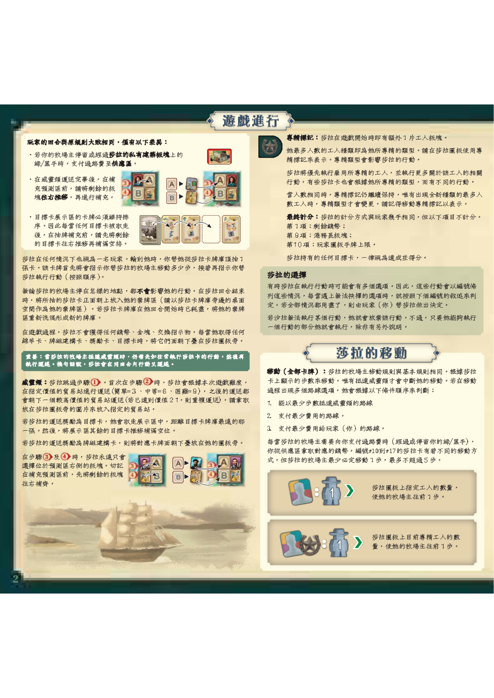
遊戲進行
玩家的回合與原規則大致相同，僅有以下差異：
- 若你的牧場主停留或經過莎拉的私有建築板塊上的綠/黑手時，支付過路費至供應區。
- 在威靈頓運送完畢後，在補充預測區前，請將剩餘的板塊往右推移，再進行補充。
- 目標卡展示區的卡牌必須維持排序。因此每當任何目標卡被取走後，在抽牌補充前，請先將剩餘的目標卡往右推移再補滿空格。
莎拉在任何情況下也視為一名玩家。輪到她時，你替她從莎拉卡牌庫頂抽 1 張卡。該卡牌首先將會指示你替莎拉的牧場主移動多少步，接著再指示你替莎拉執行行動（按照順序）。
無論莎拉的牧場主停在怎樣的地點，都不〔圖示〕影響她的行動。在莎拉回合結束時，將所抽的莎拉卡正面朝上放入她的棄牌區（請以莎拉卡牌庫旁邊的桌面空間作為她的棄牌區）。若莎拉卡牌庫在她回合開始時已耗盡，將她的棄牌區重新洗混形成新的牌庫。
在遊戲過程，莎拉不會獲得任何錢幣、金塊、交換指示物。每當她取得任何綿羊卡、牌組建構卡、獎勵卡、目標卡時，將它們面朝下疊在莎拉圖板旁。
重要：當莎拉的牧場主抵達威靈頓時，仍需先如往常執行莎拉卡的行動，然後再執行運送。換句話說，莎拉會在同回合內行動及運送。
威靈頓：莎拉跳過步驟❶。首次在步驟❷時，莎拉會根據本次遊戲難度，在指定價值的貿易站進行運送（簡單=3、中等=6、困難=9），之後的運送都會朝下一個較高價值的貿易站運送（若已達到價值21，則重複運送）。請拿取放在莎拉圖板旁的圓片來放入指定的貿易站。
若莎拉的運送獎勵為目標卡，她會取走展示區中，距離目標卡牌庫最遠的那一張。然後，將展示區其餘的目標卡推移補滿空位。
若莎拉的運送獎勵為牌組建構卡，則將對應卡牌面朝下疊放在她的圖板旁。
在步驟❸及❹時，莎拉永遠只會選擇位於預測區右側的板塊。切記在補充預測區前，先將剩餘的板塊往右補齊。
專精標記：莎拉在遊戲開始時即有額外 1 片工人板塊。
她最多人數的工人種類即為她所專精的類型。請在莎拉圖板使用專精標記來表示。專精類型會影響莎拉的行動。
莎拉將優先執行雇用所專精的工人，並執行更多關於該工人的相關行動。有些莎拉卡也會根據她所專精的類型，而有不同的行動。
當人數相同時，專精標記仍繼續保持，唯有出現全新種類的最多人數工人時，專精類型才會變更。請記得移動專精標記以表示。
最終計分：莎拉的計分方式與玩家幾乎相同，但以下項目不計分。
第 1 項：剩餘錢幣；
第 9 項：港務長板塊；
第10項：玩家圖板手牌上限。
莎拉持有的任何目標卡，一律視為達成並得分。
莎拉的選擇
有時莎拉在執行行動時可能會有多個選項。因此，這些行動會以編號條列這些情況，每當遇上無法抉擇的選項時，就按照下個編號的敘述來判定。若全部情況都用盡了，則由玩家（你）替莎拉做出決定。
若沙拉無法執行某個行動，她就會放棄該行動。不過，只要她能夠執行一個行動的部分她就會執行，除非有另外說明。
莎拉的移動
移動（全部卡牌）：莎拉的牧場主移動規則與基本規則相同。根據莎拉卡上顯示的步數來移動。唯有抵達威靈頓才會中斷她的移動。若在移動過程出現多個路線選項，她會根據以下條件順序來判斷：
- 能以最少步數抵達威靈頓的路線
- 支付最少費用的路線。
- 支付最少費用給玩家（你）的路線。
每當莎拉的牧場主需要向你支付過路費時（經過或停留你的綠/黑手），你從供應區拿取對應的錢幣。編號#10到#17的莎拉卡有著不同的移動方式。但莎拉的牧場主最少必定移動 1 步，最多不超過 5 步。
〔圖例：工人板塊圖示〕：〔1〕→ 莎拉圖板上指定工人的數量，使她的牧場主往前 1 步。
〔圖例：工人板塊＋馬蹄鐵圖示〕：〔1〕→ 莎拉圖板上目前專精工人的數量，使她的牧場主往前 1 步。
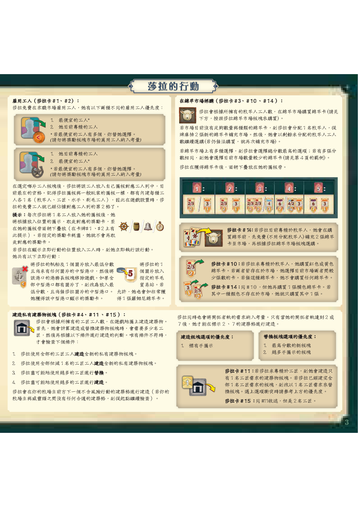
莎拉的行動
雇用工人（莎拉卡#1、#2）：
莎拉免費在求職市場雇用工人，她有以下兩種不同的雇用工人優先度：
〔圖示：工人板塊＋錢幣〕
1. 最便宜的工人*
2. 她目前專精的工人
\*若最便宜的工人有多個，你替她選擇。
(請勿將獎勵板塊市場的萬用工人納入考量)
〔圖示：工人板塊＋馬蹄鐵〕
1. 她目前專精的工人
2. 最便宜的工人*
\*若最便宜的工人有多個，你替她選擇。
(請勿將獎勵板塊市場的萬用工人納入考量)
在選定哪片工人板塊後，莎拉將該工人放入自己圖板對應工人列中，目前最左的空格。記得莎拉圖板與一般玩家的圖板一樣，都有內建每種工人各1名（牧羊人、工匠、水手、剃毛工人），因此在遊戲設置時，莎拉的免費工人就已經佔據對應工人列的第2格了。
提示：每次莎拉將1名工人放入她的圖板後，她將根據放入位置的圖示，取走對應的獎勵卡，並在她的圖板旁面朝下疊放（在卡牌#1、#2上有此提示）。若指定的獎勵卡耗盡，她就不會再取走對應的獎勵卡。
（提示文右側配圖：船舵／木桶／鐘／羅盤四種獎勵卡圖示，以斜線相隔，圖上無文字。）
若莎拉在顯示立即行動的位置放入工人時，則她立即執行該行動。她共有以下立即行動：
- 〔圖示：錨＋紅色叉〕將莎拉的帆船及1個圓片放入最低分數且尚未有任何圓片的中型港口，然後將該港口的港務長板塊移除遊戲。如果全部中型港口都有圓片了，則改為放入最低分數，且尚無莎拉圓片的中型港口。她獲得該中型港口顯示的獎勵卡。
- 〔圖示：5號羊毛貿易站〕將莎拉的1個圓片放入指定的羊毛貿易站。若允許，她也會如往常獲得1張羅姆尼綿羊卡。
在綿羊市場採購（莎拉卡#3、#10、#14）：
〔圖示：綿羊〕莎拉會根據所擁有的牧羊人工人數，在綿羊市場購買綿羊卡(請見下方，按照莎拉綿羊市場板塊來購買)。
若市場目前沒有足夠數量與種類的綿羊卡，則莎拉會分配1名牧羊人，從牌庫抽2張新的綿羊卡補充市場。然後，她會以剩餘未分配的牧羊人工人數繼續選購(若仍無法購買，就再次補充市場)。
若綿羊市場上有多種選擇，則莎拉會選擇總分數最高的選項；若有多張分數相同，則她會選擇目前市場數量較少的綿羊卡(請見第4頁的範例)。
莎拉在獲得綿羊卡後，面朝下疊放在她的圖板旁。
（下方配圖：莎拉綿羊市場板塊照片，共5欄，分別標示「1:」「2:」「3:」「4:」「5:」，欄內為綿羊卡圖樣，卡上數字過小無法辨識。）
莎拉卡#14：若莎拉目前專精於牧羊人，她會在購買綿羊前，先免費(不用分配牧羊人)補充2張綿羊卡至市場，再根據莎拉綿羊市場板塊選購。
莎拉卡#10：若莎拉未專精於牧羊人，她購買紅色或黃色綿羊卡。若兩者皆存在於市場，她選擇目前市場兩者間較少張數的卡。若無這種綿羊卡，她不會購買任何綿羊卡。
莎拉卡#14：同#10，但她再購買1張橘色綿羊卡。若其中一種顏色不存在於市場，她就只購買其中1張。
（上兩框左側配圖：綿羊卡與對應顏色箭頭圖示，圖上無可辨識規則文字。）
建造私有建築物板塊（莎拉卡#4、#11、#15）：
〔圖示：建築物板塊〕莎拉會根據所擁有的工匠工人數，在遊戲地圖上建造建築物。首先，她會計算建造或替換建築物板塊時，會需要多少名工匠，然後再根據以下條件進行建造的判斷。唯有條件不符時，才會檢查下個條件：
- 莎拉使用全部的工匠工人建造全新的私有建築物板塊。
- 莎拉使用全部但減1名的工匠工人建造全新的私有建築物板塊。
- 莎拉盡可能地使用越多的工匠進行替換。
- 莎拉盡可能地使用越多的工匠進行建造。
莎拉會在你的牧場主前方下一個不含風險行動的建築格進行建造（若你的牧場主與威靈頓之間沒有任何合適的建築格，則從起點繼續檢查）。
莎拉同時也會將開拓者軌的需求納入考量。只有當她的開拓者軌達到2或7後，她才能在標示2、7的建築格進行建造。
建造板塊選項的優先度：
1. 標有手圖示
替換板塊選項的優先度：
1. 最高分數的新板塊
2. 越多手圖示的板塊
〔圖示：1名工匠需求標記＋建築物板塊〕
莎拉卡#11：若莎拉未專精於工匠，則她會建造只有1名工匠需求的建築物板塊。若莎拉已經建完全部1名工匠需求的板塊，則改以1名工匠需求來替換板塊。遇上選項衝突時請參考上方的優先度。
莎拉卡#15：同#11敘述，但是2名工匠。
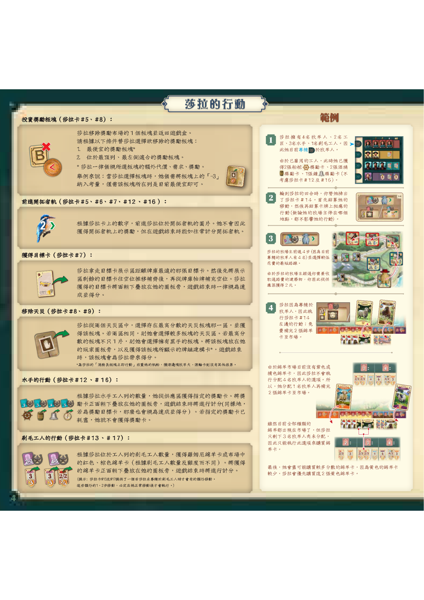
莎拉的行動
投資獎勵板塊（莎拉卡#5、#8）
莎拉移除獎勵市場的1個板塊並返回遊戲盒。 請根據以下條件替莎拉選擇欲移除的獎勵板塊：
- 最便宜的獎勵板塊\*
- 位於最頂列、最左側適合的獎勵板塊。
\*莎拉一律無視所選板塊的額外代價、需求、獎勵。
舉例來說：當莎拉選擇板塊時，她無需將板塊上的「-3」納入考量，僅需該板塊所在列是目前最便宜即可。
圖示：一枚「B」獎勵板塊圖樣上疊紅色叉叉與一枚「＜」銅幣；右側另有一小板塊圖樣，上面標數字2、「-3」與字母「B」。
前進開拓者軌（莎拉卡#5、#6、#7、#12、#16）
根據莎拉卡上的數字，前進莎拉位於開拓者軌的圓片。她不會因此獲得開拓者軌上的獎勵，但在遊戲結束時能如往常計分開拓者軌。
圖示：翠鳥旁標數字「2」與綠色箭頭。
獲得目標卡（莎拉卡#7）
莎拉拿走目標卡展示區距離牌庫最遠的那張目標卡。然後先將展示區剩餘的目標卡往空位推移補齊後，再從牌庫抽牌補充空位。莎拉獲得的目標卡將面朝下疊放在她的圖板旁，遊戲結束時一律視為達成並得分。
圖示：一張目標卡（小號圖案，左上角有＊號）與綠色箭頭。
移除天災（莎拉卡#8、#9）
莎拉從兩個天災區中，選擇存在最高分數的天災板塊那一區，並獲得該板塊。若兩區相同，則她會選擇較多板塊的天災區。若最高分數的板塊不只1片，則她會選擇擁有黑手的板塊。將該板塊放在她的玩家圖板旁，以及獲得該板塊所顯示的牌組建構卡\*，遊戲結束時，該板塊會為莎拉帶來得分。
\*為莎拉的「港務長板塊立即行動」放置她的帆船，獲得邊境牧羊犬，渡輪卡則沒有其他效果。
水手的行動（莎拉卡#12、#16）
根據莎拉水手工人列的數量，她從供應區獲得指定的獎勵卡。將獎勵卡正面朝下疊放在她的圖板旁，遊戲結束時將進行計分(同樣地，若為獎勵目標卡，那麼也會視為達成並得分）。若指定的獎勵卡已耗盡，她就不會獲得獎勵卡。
圖示：編號「2」「3」「4」「5」的水手板塊，下方箭頭分別指向船舵、酒桶、鐘、羅盤圖案。
剃毛工人的行動（莎拉卡#13、#17）
根據莎拉位於工人列的剃毛工人數量，獲得羅姆尼綿羊卡或市場中的紅色、棕色綿羊卡（根據剃毛工人數量及難度而不同）。將獲得的綿羊卡正面朝下疊放在她的圖板旁，遊戲結束時將進行計分。
(提示：莎拉卡#13及#17提供了一個若莎拉未專精於剃毛工人時才會有的額外移動，這些額外的1、2步移動，必定在她正常移動後才會執行。）
圖示：兩片剃毛工人板塊分別標「2-3」「4-5」；三張綿羊卡分別標「3」（盾牌3）、「3」（盾牌3）、「2/2」（盾牌2/4）。
範例
- 莎拉擁有4名牧羊人，2名工匠，3名水手，1名剃毛工人。因此她目前專精〔藍色字，其後附深色馬蹄鐵圖示〕於牧羊人。
由於已雇用的工人，此時她已獲得2張船舵〔船舵圖示〕獎勵卡，2張酒桶〔酒桶圖示〕獎勵卡，1張鐘〔鐘圖示〕獎勵卡(不考慮莎拉卡#12及#16)。
- 輪到莎拉的回合時，你替她抽出了莎拉卡#14。首先結算她的移動，然後再結算卡牌上相應的行動(無論她的牧場主停在哪個地點，都不影響她的行動)。
- 莎拉的牧場主前進4步(因為目前專精的牧羊人有4名)並選擇較低花費的最短路線。
由於莎拉的牧場主經過你需要收取過路費的建築物，你因此從供應區獲得2元。
- 莎拉因為專精於牧羊人，因此執行莎拉卡#14左邊的行動：免費補充2張綿羊卡至市場。
由於綿羊市場目前沒有紫色或橘色綿羊卡，因此莎拉不會執行分配4名牧羊人的選項。所以，她分配1名牧羊人再補充2張綿羊卡至市場。
雖然目前全部種類的綿羊都出現在市場了，但莎拉只剩下3名牧羊人尚未分配，因此只能執行此選項來購買綿羊卡。
最後，她會盡可能購買較高分數的綿羊卡，因為黃色的綿羊卡較少，莎拉會優先購買這2張黃色綿羊卡。